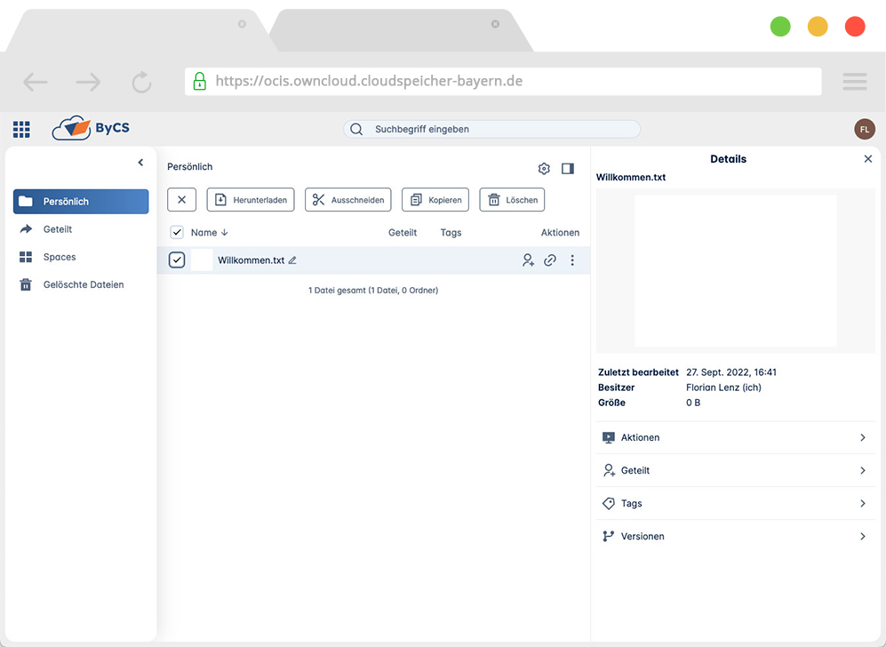
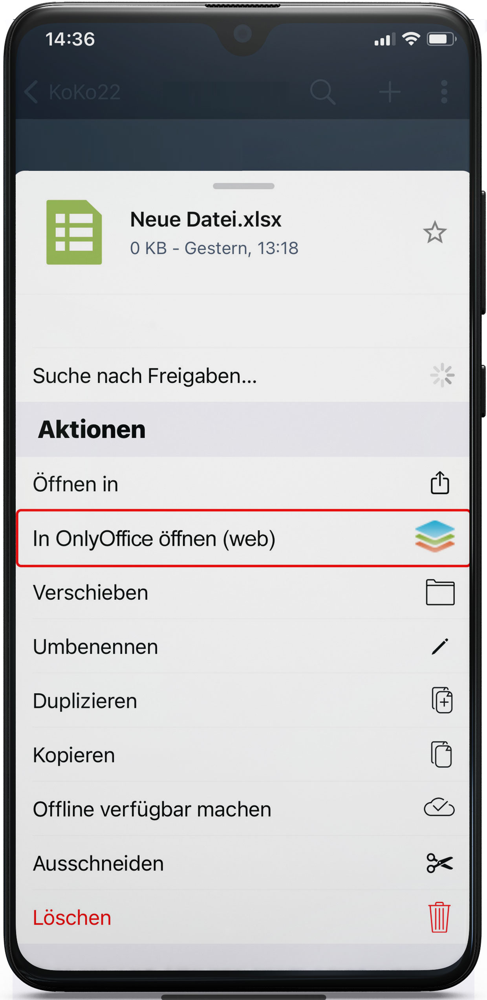
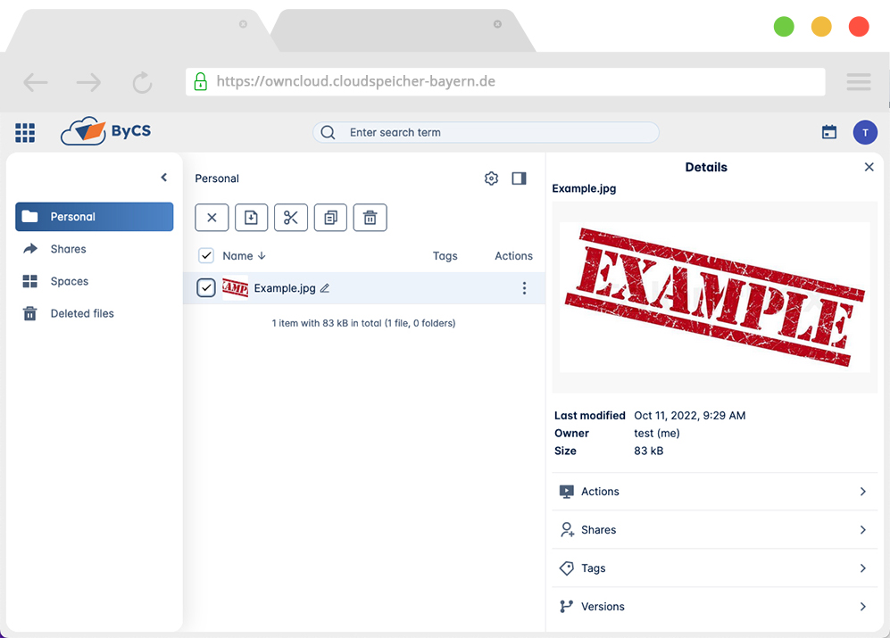
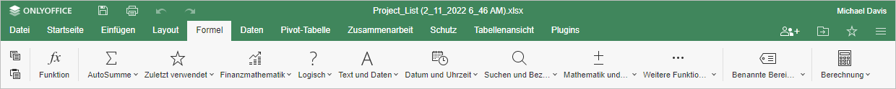

Willkommen
FUJITSU möchte sich noch einmal für die Einladung zu Ihrer Ausschreibung „Bereitstellung von Kommunikations- und Kollaborationstools für bayerische Schulen im Rahmen des Programms BayernCloud Schule“ bedanken.
Nachdem wir dem Bayerischen Staatsministerium für Unterricht und Kultus (StMUK) unser finales Angebot für Los 1 unterbreitet haben, gilt es jetzt, Ihnen die angeforderte Kollaborationslösung für Testzwecke zur Verfügung zu stellen.
Ein "WebOffice" basierend auf einem ubiquitär verfügbaren Cloudspeicher ist inzwischen auch im Schulunterricht zum schnellen und einfachen Kollaborationsmedium avanciert. Die zeitgemäße Schule erstreckt sich so über das Schulgebäude auch auf verbundene Lernsituationen unterwegs, zu Hause, auf Exkursionen oder in beteiligten Institutionen.
Da ist für die individuelle, aber überall verfügbare "Schularbeit" sowie für den Austausch in variablen Gruppen ein WebOffice als Kollaborationsmedium unabdingbar. Das WebOffice benötigt wiederum den sicheren und hochverfügbaren Cloudspeicher als Plattform zur Verwaltung der "Schularbeiten" auf Dateiebene. Idealerweise nehmen die Nutzenden die Cloudspeicher-Verwaltungs-Software und das WebOffice als eine übergangslose Arbeitsumgebung wahr. Und der Vielfalt in der Schulwelt entsprechend ist diese Kollaborationsumgebung selbstverständlich auch über verschiedene Gerätetypen per Web-Browser oder als App verfügbar.
Die hier dargestellte Kollaborationslösung besteht aus dem physikalischen Cloudspeicher, der Cloudspeicher-Verwaltungs-Software und dem WebOffice. Die Systeme sind über das Identity & Accessmanagement so verbunden, dass Nutzende bei einmaliger Anmeldung in der BayernCloud Schule die verbundenen Module durchgängig erreichen (Single Sign On). Gerade im schulischen Umfeld muss ein so komplexes und verbundenes System auch die besondere Schutzwürdigkeit der jungen Menschen umfassend beachten. Die hier dargestellte Kollaborations-Lösung basiert auf einem Cloud-Speicher, der in Deutschland lokalisiert und DSGVO-konform ist. Das Lösungs-Design mit durchgängigem Identity Management ermöglicht den hohen Schutz der Identität der Nutzenden und ein kontinuierliches Security Monitoring schützt das System sowie die Nutzenden vor weiteren "Digitalen Gefährdungen".
Der hier vorgestellte Kollaborationsumgebung soll ein integrales Modul der BayernCloud Schule (ByCS) werden. So ist die konzeptionelle "Orchestrierung" des Cloudspeichers, der Cloudspeicher-Verwaltungs-Software und des WebOffices nicht nur den technischen bzw. normativen Vorgaben gefolgt, sondern orientiert sich auch an den schulischen Nutzungsszenarien. Diese Kollaborationsumgebung begleitet die Lehrenden und Lernenden durch ihren "Lerntag" hinsichtlich der Organisation der "Schularbeiten" ebenso wie in der Kollaboration in virtuellen Lernräumen.
All dies erreichen wir nur über Partnerschaften. Diese Kollaborationsumgebung wird durch etablierte und innovative Partner für die BayernCloud Schule "as a Service" zur Verfügung gestellt:
- FUJITSU: Umfassende Technologie- und Sicherheitskompetenz; seit 20 Jahren mit schulischen Nutzungsszenarien und pädagogischen Herausforderungen vertraut;
- PlusServer: Engagiert in der Digitalen Souveränität der EU (Projekt GAIA-X) stellt PlusServer in Deutschland verlässlich und sicher die hochskalierbare Cloudspeicher-Infrastruktur zur Verfügung;
- ownCloud: Eine Institution für die "Digitale Souveränität" in Deutschland ermöglicht den Zugang zur Cloud, die Verwaltung der "Schularbeiten" und synchronisiert die Dokumente. Die modernen und einzigartigen "Spaces" von ownCloud sind personenunabhängige Arbeitsräume, die besonders Arbeitsgruppen, aber auch die Schulverwaltung unterstützen. Und zum Arbeiten selbst ist Onlyoffice in ownCloud als Kollaborations¬ebene integriert.
Partnerschaften verbinden uns. Gemeinsam mit unseren Partnern PlusServer und ownCloud wollen und werden wir die Anforderungen Ihres Ministeriums erfüllen, um im Rahmen der BayernCloud Schule einen Mehrwert für die Nutzung durch angeschlossene Schulen, den Lehrenden und der eigentlichen Zielgruppe, den Lernenden, zu etablieren. Werfen Sie einen Blick auf uns: https://vimeo.com/user71042276/review/720692021/299b04529f
Als staatliche Institution ist das Bayerische Staatsministerium für Unterricht und Kultus maßgeblich dynamischen Herausforderungen ausgesetzt, auf die es fundiert zu reagieren gilt. In einer Partnerschaft können diese Entwicklungen nicht nur früh angesprochen, sondern auch ideenreich und gemeinschaftlich bewertet werden.
Mit dem Angebot zur Etablierung einer Kollaborations-Plattform bringen wir in diesem Zusammenhang unser Partner-Ökosystem ein. Gemeinsam möchten wir die Zukunft mit Ihnen weiter gestalten und Innovation entstehen lassen.
Was Sie jetzt im weiteren Dokument erwartet
Dieses Dokument beinhaltet alle relevanten Punkte, die durch das Bayerische Staatsministerium für Unterricht und Kultus als notwendig für den Eignungstest ausgewiesen worden sind. Wir haben uns die Freiheit genommen, Ihnen eine Übersicht bereitzustellen, die die Handhabung Schritt für Schritt erklärt.
Zur besseren Orientierung wurde Bezug auf die Anforderungsnummern der Bewertungsmatrix genommen.
Mit diesem kurzen Einblick hinter die Kulissen wünschen wir Ihnen und uns viel Erfolg in der Testumgebung, für Fragen stehen wir Ihnen jederzeit zur Verfügung.
Viele Grüße, ihr Cloudspeicher- und Weboffice-Team.
Erste Schritte
In diesem Kapitel erklären wir Ihnen die grundsätzlichen Schritte, wie Sie ownCloud einrichten. Hierbei gehen wir auch auf die Einrichtung der Clients ein.
Web-Client
Der einfachste, umfangreichste und deshalb meistgenutzte Weg, ownCloud zu benutzen ist der Web-Client. Diesen rufen Sie einfach wie von anderen, modernen Softwarelösungen gewohnt, in Ihrem bevorzugten Browser auf. Die URL, unter der Sie ownCloud für die verifizierende Teststellung erreichen lautet:
Login
Nach dem Aufrufen der URL wird Ihnen die Anmeldemaske angezeigt.

Hier können Sie sich mit den in Kapitel 4: Accounts gelisteten Accounts anmelden. Tragen Sie dazu den Benutzernamen und das Passwort in die dafür vorgesehenen Felder ein und klicken Sie auf "Anmelden".
Sie befinen sich nun in der Standardansicht. Weitere Informationen zur Nutzung des Web-Clients finden Sie in Kapitel 3.1: Web.
Desktop Client
Der Desktop Client ist die Schnittstelle zwischen Ihrem PC/Laptop und dem Cloud-Server, auf dem ihre Dateien gespeichert sind. Er dient dazu, Ihnen lokal alle Dateien und Ordner zur Verfügung zu stellen, z.B. für den Offline-Gebrauch. Der Desktop-Client stellt sicher, das Ihre lokalen Dateien und die auf Ihrem Server stets synchornisiert bleiben - Änderungen werden bei vorhandener Internetverbindung sofort weitergegeben. Und das alles ohne, dass Sie sich aktiv darum kümmern müssen.
Download
ownCloud stellt für alle gängigen Betriebssysteme entsprechende Desktop-Clients zur Verfügung. Sie können sich diesen hier herunterladen:
| Betriebssystem | Downloadlink | Systemvoraussetzungen |
|---|---|---|
| Windows | bycs.owncloud.works/client/bycs/bycs-3.0.0-alpha4.8660.x64.msi | 64bit, 32bit version |
| Mac | bycs.owncloud.works/client/bycs/bycs-3.0.0-alpha4.8660.pkg | 64bit Mac OS X 10.12+ |
| Linux Repositories | bycs.owncloud.works/client/bycs/linux/download | - |
| Linux AppImage | bycs.owncloud.works/client/bycs/bycs-3.0.0-alpha4.8660.AppImage | - |
Einrichtung
- Nach der Installation starten Sie das Programm. Sie werden beim ersten Start durch den Einrichtungsprozess geführt.

Klicken Sie rechts unten auf "Weiter"
- Damit der Client weiß, welches Benutzerkonto synchronisiert werden soll müssen Sie sich nun mit Ihrem Benutzer anmelden. Dies geschieht über die Anmeldemaske des Web Clients. Klicken Sie hierzu auf "Browser öffnen".

Es öffnet sich ein Browserfenster mit der Anmeldemaske.

Geben Sie hier nun Ihren Benutzernamen und Ihr Passwort ein. Diese können Sie dem Kapitel 4. Accounts entnehmen.
Klicken Sie abschließend auf "Anmelden".
- Nach erfolgreicher Anmeldung können Sie das Browserfenster schließen.

Wechseln Sie zurück um Desktop Client, der nun ebenfalls eine Erfolgsmeldung anzeigt.

Hiermit ist die grundsätzliche Einrichtung des Desktop Clients abgeschlossen. Es werden nun alle Resourcen, die Ihrem Benutzer zur Verfügung stehen, lokal auf Ihren PC synchronisiert.
Erweiterte Einstellungen
Die Schaltfläche "Erweiterte Einstellungen" öffnet ein Auswahlfeld, in dem Sie festlegen können, an welchen Speicherort auf Ihrem PC die Daten synchronisiert werden. Standardmäßig wird hierfür automatisch Ihr Benutzerverzeichnis ausgewählt. Um dies zu ändern klicken Sie rechts auf den Button […] und wählen Sie Ihr gewünschtes Verzeichnis.

Mit Klick auf "Beenden" schließen Sie die Einrichtung ab.
Clients
ownCloud bietet seinen Nutzern mehrere Möglichkeiten auf Ihre Dateien zuzugreifen. Im Folgenden sollen diese kurz vorgestellt werden.
Web-Client
ownCloud Web ist die meist genutzte Oberfläche für den Zugriff auf Dateien. Sie lässt sich über jeden modernen Browser bedienen, bietet eine moderne Userexperience und umfassende Funktionen zum Teilen und Bearbeiten von Dateien und Ordnern. Zudem ist in der Weboberfläche ein komplettes WebOffice-Paket enthalten, mit dem Sie Dokumente, Kalkulationstabellen und Präsentationen direkt im Browser erstellen und bearbeiten können.
Wie Sie sich für die verifizierende Teststellung im Web-Client anmelden können erfahren Sie im Kapitel Erste Schritte.
Erläuterung der Elemente
Die Web-Oberfläche gliedert sich wie folgt:
Top Naviagtion

Hier finden Sie statische Elemente, die unabhängig vom unteren Bereich immer sichtbar sind. Von links nach rechts:
- App-Switcher: Hier können Sie zwischen verschiedenen Apps wechseln - sofern welche installiert sind. In dieser Teststellung ist keine Erweiterung installiert.
- Logo: Dies wurde individuell angepasst werden und ist den Benutzern als feststehendes Objekt eine gute Orientierungshilfe. Mit Klick auf das Logo gelangen Sie stets in Ihren persönlichen Speicherbereich.
- Suchfeld: Hier können Sie nach Dateien und Ordnern suchen. Die Suche ist ein sehr mächtiges Tool und umfasst u.a. eine Volltextsuche und Suche nach Tags. Geben Sie hierzu einfach Ihren gewünschten Suchbegriff ein. Es werden Ihnen direkt Vorschläge gemacht und mit Drücken der Enter-Taste gelangen Sie auf eine umfassende Suchergebnis-Seite.
- Initialen: Hier finden Sie Informationen zum aktuell angemeldeten Benutzer, die Einstellungen, können Sich vom Web-Client abmelden und eine Anzeige über die aktuelle Nutzung Ihres Speicherbereichs.
Linke Sidebar

Hier finden Sie Navigationselemente, die Sie schnell auf Ihre persönlichen Bereiche bringen:
- Persönlich: Dies ist Ihr eigener, persönlicher Speicherbereich, auf den nur Sie Zugriff haben.
- Geteilt: Hier finden Sie einen Überblick über Resourcen, die Sie mit anderen geteilt oder anderen mit Ihnen geteilt haben.
- Spaces: Hier finden Sie alle Spaces, auf die Sie Zugriff haben. Was genau Spaces sind und warum diese ownCloud so einzigartig machen erklärt Produktmanager Patrick Maier in diesem Blogbeitrag (englisch): Spaces: A Quantum Leap for Enterprise Collaboration.
- Gelöschte Dateien: Ein Papierkorb, der gelöschte Dateien zur Wiederherstellung bereithält.
Dateilliste

Das wohl wichtigste Element. Hier werden alle Dateien und Ordner des aktuellen Verzeichnisses angezeigt. Jede Datei und jeder Ordner bietet unterschiedliche Aktionen, die entweder über das Kontextmenü (= Rechtsklick) oder über die Aktionsicons am rechten Rand der jeweiligen Zeile aufgerufen werden können.
Rechte Sidebar

Hier finden Sie spezifische Informationen und Aktionsmöglichkeiten zur ausgewählten Datei oder Ordner. Die rechte Sidebar lässt sich über das  Icon ein- und ausblenden.
Icon ein- und ausblenden.
Eine vollständige Dokumentation der Weboberfläche und weiterführende Informationen finden Sie hier (momentan nur auf englisch verfügbar, demnächst auch auf deutsch).
Desktop-Sync-Client

Der Desktop-Sync-Client sorgt im Hintergrund dafür, dass Ihre lokale Kopien Ihrer Dateien immer auf dem aktuellsten Stand sind. Die kontinuierliche Synchronisierung mit Ihrem Datei-Cloud-Server sorgt für eine einfache Nutzung in Kombination mit einer umfassenden Zugriffskontrolle. Sie können auf Dateien und Ordner in ownCloud lokal zugreifen, diese freigeben, bearbeiten und offline verfügbar machen.
Die Desktop-App integriert sich nahtlos in die nativen Dateimanager von Windows, macOS und Linux. Dateien können nahtlos in lokaler Software geöffnet und schnell über das ownCloud-Kontextmenü geteilt werden, egal ob Sie im Explorer, Finder, Nautilus oder Dolphin arbeiten. Es ermöglicht das Kopieren eines öffentlichen Links in die Zwischenablage, das Kopieren eines privaten Links in die Zwischenablage, das Öffnen des Freigabedialogs für spezifischere Anforderungen, das Öffnen im Browser oder das Anzeigen des Versionsverlaufs im Browser.
Das integrierte virtuelle Dateisystem verbessert die Benutzerfreundlichkeit und verringert den lokalen Speicherbedarf. Wenn es aktiviert ist, wird lediglich eine Platzhalter-Datei anstelle der vollständigen Datei synchronisiert, wobei die echte Datei nur bei Bedarf heruntergeladen wird, z. B. um ein Dokument in einer Anwendung zu öffnen. Benutzer können virtuelle Dateien in ihrem Dateimanager freigeben, auch wenn sie nicht lokal gespeichert sind. Weiterführende Informationen über das ownCloud Virtual File System (VFS) finden Sie hier.
Wie Sie den Desktop-Client für die verifizierende Teststellung einrichten und nutzen können erfahren Sie im Kapitel Erste Schritte.
Die offizielle, vollständige Dokumentation des Desktop-Clients (aktuell nur auf englisch verfügbar, demnächst auch auf deutsch) finden Sie hier.
Mobile (iOS/Android)

ownCloud bietet ebenfalls Apps für iOS und Android und stellt so eine einfache Möglichkeit zur Verfügung schnell und unkompliziert von unterwegs auf Ihre Daten zuzugreifen. Einige Fuktionen der Apps sind:
- Bestens integriert: Dank der Dokumentenanbieter-Integration in Android und der Share Sheet- und Files- App-Integration in iOS können Sie mit ownCloud-Apps Dateien in Ihren bevorzugten Anwendungen nahtlos bearbeiten.
- Offline Bandbreite einsparen: Stellen Sie Dateien und Ordner selektiv offline zur Verfügung, so dass Sie auch offline darauf zugreifen können. Praktisch für Flugreisen, in abgelegenen Gebieten und zum Einsparen von Bandbreite.
- Entsperren mit nur einem Lächeln: Sowohl die Android- als auch die iOS-App unterstützen biometrische Sperren mittels FaceID und/oder TouchID, sodass Ihre Daten besonders sicher sind.
- Auf Sie zugeschnitten: Die ownCloud-Apps lassen sich jederzeit an Ihre Ihre Corporate Identity anpassen. Zudem lassen sich ebenfalls individuelle Einstellungen für Ihre Benutzer setzen.
- Mehrere Konten: Verbinden Sie sich mit mehreren ownCloud-Konten mit nur einer mobilen App, um auf alle Ihre Daten zuzugreifen
Wie Sie die mobile Apps für die verifizierende Teststellung einrichten und nutzen können erfahren Sie im Kapitel Erste Schritte.
Die offizielle, vollständige Dokumentation für die Mobile Clients (aktuell nur auf englisch verfügbar, demnächst auch auf deutsch) finden Sie hier für iOS und hier für Android.
Accounts
Für die verifizierende Teststellung sind 30 Testaccounts gefordert. Diese Accounts sind im Folgenden aufgelistet mit Benutzername und Passwort.
Eine Anleitung zur Anmeldung und der ersten Schritte finden Sie im Kapitel Erste Schritte.
Die Zugangsdaten gelten für alle Clients (Web, Deskop, Mobile) und auch für das Monitoring-Dashboard (s. Kapitel 5: Monitoring).
Admin Accounts
| Nutzername | Password |
|---|---|
| Admin 1 |
password1 |
| Admin 1 | password1 |
| Admin 1 | password1 |
| Admin 1 | password1 |
| Admin 1 | password1 |
Accountliste
| Nutzername | Password |
|---|---|
| User 1 | password1 |
Funktionen
In diesem Kapitel erhalten Sie Anleitungen für einige grundlegende Workflows, wie Sie mit ownCloud arbeiten können.
Dateien erstellen
ownCloud bietet eine native Möglichkeit, schnell und unkompliziert neue Dateien der gängigsten Dateitypen zu erstellen. Klicken Sie dazu in der Dateiliste auf den Button "Neu". Im sich öffnenden Kontextmenü können Sie nun Ihren gewünschten Dateityp auswählen.

Nach der Eingabe des gewünschten Dateinamens öffnet sich die Datei je nach Typ im standardmäßigen Editor. Sie können somit direkt beginnen, Ihr Dokument zu bearbeiten.
Dateien und Ordner hochladen
Vorhandene, lokale Dateien können Sie spielend einfach in die Cloud hochladen. Klicken und ziehen Sie entsprechende Dateien per Drag'n Drop in die Dateiliste oder nutzen Sie den Button "Hochladen". Sowohl Dateien als auch ganze Ordner können auf beiden Wegen hochgeladen werden.
Upload via Desktop Sync-Client
Um Dateien mit Hilfe des Desktop-Sync-Clients hochzuladen fügen Sie die entsprechenden Dateien einfach in Ihr während der Installation angegebenes Sync-Verzeichnis. Der Desktop-Sync-Client lädt nun im Hintergrund Ihre Dateien hoch und hält diese synchron.
Upload via Mobile Client
Um eine Datei von Ihrem mobilen Endgerät hochzuladen klicken Sie in der App auf das + Icon. Sie können dann entweder aus Ihren Dateien ("Datei hochladen"),
aus Ihrer Fotomediathek ("Hochladen aus Fotobibliothek") oder direkt ein Foto mit Ihrer Kamera aufnehmen ("Foto oder Video aufnehmen") und zum Upload auswählen.

Dateien und Ordner mit anderen Personen teilen
Eine der wichtigsten Funktionen einer Cloud-Lösung besteht in der Möglichkeit, Dateien mit anderen Personen zu teilen. ownCloud bietet hierfür weitreichende Möglichkeiten. Klicken Sie dazu auf das Share Icon  einer Datei oder Ordner oder wählen Sie im Kontextmenü (= Rechtsklick auf die entsprechende Ressource) "Teilen"
einer Datei oder Ordner oder wählen Sie im Kontextmenü (= Rechtsklick auf die entsprechende Ressource) "Teilen"

In der sich öffnenden rechten Sidebar haben Sie nun zwei Optionen:
Mit anderen teilen
Mit anderen Personen teilen bedeutet, dass Sie Kollegen und Schülern Zugriff auf Ihre Datei gewähren. Sie geben also explizit an, mit wem Sie die Ressource teilen möchten. Hierbei können Sie einzelne Namen, E-Mail-Adressen oder Gruppennamen eingeben.
Des weiteren können Sie Berechtigungen festlegen. Klicken Sie dazu auf "Als Betrachter einladen". Es stehen Ihnen folgende Optionen zur Verfügung:

- Betrachter - Die empfangende Person kann die Datei lediglich betrachten, herunterladen und teilen. Sie kann diese aber nicht bearbeiten.
- Bearbeiter - Selbe Berechtigung wie "Betrachter" aber kann zusätzlich die Datei bearbeiten.
- Benutzerdefinierte Rechte - Sollten Sie individuelle Berechtigungen vergeben wollen können Sie dies hier tun.

Mit Klick auf "Teilen" stellen Sie den entsprechenden Personen nun die Ressource zur Verfügung. Diese werden dabei per E-Mail benachrichtigt und finden die Datei ab sofort in ihrem persönlichen Speicherbereich.
Per Link teilen
Sollten Sie eine Ressource mit anderen teilen wollen die nicht zu Ihrer Organisation oder Schule gehört können Sie die Funktion "per Link teilen" verwenden. Hierbei wird ein Link erstellt über den die entsprechende Ressource erreichbar ist.
Hierbei wird noch einmal unterschieden zwischen:
- Quicklink - Ein Zugriffslink für die Ressource mit einer feststehenden Berechtigung. Diesen erreichen Sie übrigens auch über das Quicklink Icon
 in der Dateiliste.
in der Dateiliste. - Link hinzufügen - Hier können Sie mehrfach Zugriffslinks mit unterschiedlichen Berechtigungen erstellen. Zudem können Sie zur besseren Übersicht Namen vergeben.
Mit Klick auf "Bearbeiter" können Sie analog zu "Mit anderen teilen" die Berechtigung festlegen, die für den jeweiligen Link gelten soll.
Passwortschutz und Ablaufdatum
Wie Sie einen Freigabelink mit einem Passwortschutz versehen erfahren Sie in Kapitel EG-CS-21.
Wie Sie einen Freigabelink mit einem automatischen Ablaufdatum versehen erfahren Sie in Kapitel EG-CS-22.
Mobile Clients: Dateien teilen
Um eine Datei auf den Mobile Clients zu teilen klicken Sie auf das  Icon neben der entsprechenden Datei. Um die Datei mit anderen zu teilen (s. Mit anderen teilen) wählen Sie "Dieses Datei freigeben". Um die Datei per Link zu teilen (s. Per Link teilen) wählen Sie "Links".
Icon neben der entsprechenden Datei. Um die Datei mit anderen zu teilen (s. Mit anderen teilen) wählen Sie "Dieses Datei freigeben". Um die Datei per Link zu teilen (s. Per Link teilen) wählen Sie "Links".
Alle vom Web-Client möglichen Berechtigungseinstellungen sowie Passwortschutz und Ablaufdatum lassen sich ebenfalls setzen.
Monitoring
Im Zuge des Projekts wird eine umfangreiche Monitoring-Lösung gefordert. Diese finden Sie hier:
Login
Klicken Sie zunächst auf "Sign In with Keycloak"

Sie werden nun auf den vom Web-Client bekannten Anmeldescreen geleitet. Nutzen Sie zum Login die unter Kapitel 4: Accounts gelisteten Zugangsdaten.

Sollten Sie bereits bei ownCloud angemeldet sein und eine aktive Session haben wird der Login-Prozess automatisch übersprungen.
Sie sehen nun die Grafana-Startseite, die alle relevanten Metriken im Überblick bereitstellt.

Jeder Benutzer hat lediglich Lese-Berechtigungen. Die Gefahr, unwissentlich Dinge zu löschen oder zu ändern besteht nicht. Sie können sich im Monitoring-Dashboard frei bewegen und alles erkunden.
Customer Service Portal
Das von FUJITSU bereitgestellte Customer Service Portal (CSP) dient im Projekt Koko22 primär für das Reporting der erbrachten Leistungen sowie zur Kommunikation zwischen Auftraggeber und Auftragnehmer. Entsprechend gibt es die Rollen IT-Coordinator und Provider Manager, die unterschiedliche Zugriffsberechtigungen erhalten. Das Portal ist derzeit in Englischer Sprache und kann mit Browser-Tools (Google Translate) übersetzt werden.
Vorbereitung: Login
- Login-Maske in Google Chrome öffnen (erlaubt automatische Übersetzung):

- User und Passwort eingeben, „Log in“ anklicken
- Falls erwünscht, kann eine automatische Übersetzung in Chrome aktiviert werden:

Portal-Funktionen
Startseite / Hauptfunktionen
Nach erfolgreichem Login gelangt man in das Hauptmenü, über welches die Funktionen • Get Help / Hilfe bekommen (einen Incident erstellen) • Service Catalog / Servicekatalog (einen Request erstellen)
erreichbar sind.
Die Funktion Knowledge / Wissen wird nicht verwendet, da die Knowledge-Datenbank vom Auftraggeber beigestellt wird. Über die Suchleiste kann nach Schlagworten im Portal gesucht werden (Tickets, Catalog Items…).

Über das Menü am oberen Rand sind folgende Funktionen verfügbar:
-
Durch Anklicken des BayCS-Logos am linken oberen Fensterrand in der Menüleiste gelangt man wieder in das Hauptmenü
-
Der Menüpunkt „My Tickets" öffnet ein Pull-down-Menü mit einer Übersicht der aktuellen Tickets
-
Der Menüpunkt „My Assets" führt zu den Anlagen, welche im Projekt Koko22 nicht verwendet werden, da es sich um einen SaaS-Service ohne eigene Liegenschaften handelt
-
Unter dem Menü „Service Management“ kommt man zu folgenden Submenüs:
- Overview / Überblick – Grafische Gesamtschau aktiver Vorfälle und Anfragen
- Incidents / Vorfälle – Liste aktiver und zurückliegender Vorfälle
- Requests / Anfragen – Liste aktiver und zurückliegender Anfragen
- CMDB – für ByCS nicht verwendet
- Announcements / Ankündigungen – Ankündigungsinfos (Popups, Banner, usw.)
- Contracts / Verträge – Liste ausgewählter abgelegter Vertragswerke zur Ansicht
- Reports / Berichte – Liste aktiver und zurückliegender abgelegter Berichte
- Echtzeit Dashboard – Online-Dashboard für ausgewählte Echtzeitinformationen
-
Der Menüpunkt "System Status" (Systemstatus) öffnet eine Übersicht zu aktuellen Fehlerzuständen, Auszeiten und der Statusübersicht der letzten 5 Kalendertage
System Status - Übersicht Fehlerzustände, Auszeiten und Statushistorie

Als letzter Menüpunkt in der Menüzeile ist der System Status zu sehen, eine Darstellung der Verfügbarkeit der Systeme der letzten Monate sowie geplante Wartungen. Gezeigt wird hier die Ansicht mit aktivierter automatischer Übersetzung ins Deutsche (Funktion von Google Chrome, siehe „Login-Prozedur“).

Untermenü „Service-Management“

Overview / Überblick - Übersicht Incidents und Requests
Die folgende Darstellung zeigt Ihnen eine Übersicht in Form von Kennzahlen und Diagrammen aller offener 2nd-Level-Incidents und -Requests. Durch die oben angesiedelten Filter (Hide Incidents und Hide Requests) haben Sie die Möglichkeit, den Fokus nur auf eines der beiden Themen zu lenken und das andere dabei auszublenden. Die gezeigten Zahlen sind unabhängig voneinander zu betrachten.


Incidents / Vorfälle - Übersicht über den Status von Incidents
Im Menüpunkt Incidents sieht man eine detaillierte Übersicht über aktuelle und zurückliegende Incidents. Diese können über die Schaltflächen oberhalb der Liste gefiltert werden, um z.B. nur aktive, kritische oder nicht zugewiesene Incidents anzuzeigen.

Requests / Anfragen - Übersicht über den Status von Requests
Der nächste Eintrag unter Service Management ist für die Service Requests reserviert. Hier können über die Schaltflächen oberhalb der Liste analog zu Incidents wieder eigene Filter gesetzt werden, die die Anzeige auf eine Auswahl der aktiven, der heute geöffneten oder der überfälligen Requests einschränkt. Im Standard werden nur die aktiven Tickets angezeigt.

Der Menüpunkt CMDB kommt für das Projekt Koko22 nicht zur Anwendung.
Announcements / Ankündigungen – Popups, Banner, usw.
Sowohl der Autraggeber als auch FUJITSU können wichtige Neuigkeiten über das Kundendienstportal einrichten und bekannt geben. Für jede Info kann eine Reihe von Anzeigeeigenschaften hinterlegt werden, die die Form der Nachrichtenanzeige bestimmt.

Contracts / Verträge – ausgewählte Vertragswerke zur Ansicht
Unter dem Menüpunkt Contracts können Verträge zwischen dem Auftraggeber und FUJITSU abgelegt werden, dies kann jedoch nur durch FUJITSU erfolgen. Die Nutzung des Reiters und Ablage von Vertragswerken erfolgt in Abstimmung mit dem Auftraggeber.

Reports / Berichte – Liste abgelegter Berichte
Unter dem Menüpunkt Reports werden die Service Reports, die für den Auftraggeber erstellt werden zur Einsicht abgelegt. Die Inhalte der Reports werden in der T&T festgelegt.

Echtzeit -Dashboard – Weiterleitung zur Echtzeit-Informationsseite
Im Menüpunkt Echtzeit -Dashboard erfolgt die Weiterleitung zu dem Dashboard, in welchem man den aktuellen Systemstatus sowie eine Historie einsehen kann.
Zunächst müssen einmalig Username und Password eingegeben werden:

Im Menüpunkt Echtzeit-Dashboard erfolgt die Weiterleitung zu dem Dashboard (s. Kapitel 6), in welchem man den aktuellen Systemstatus sowie eine Historie einsehen kann.
FAQ
Anforderungen
A-F-01 (PNA-01)
Anforderung
Betriebssysteme Können Sie mit dem angebotenen System im Rahmen der verifizierenden Teststellung die Erfüllung der A-Kriterien für die Nutzung mit folgenden Betriebssystemen nachweisen?
- Windows 10 (ab Version 2004) und nachfolgende Versionen von Windows, z. B. Windows 11
- macOS (ab Version 10.15)
- iOS und iPadOS (ab Version 14)
- Android (ab Version 8)
Verifizierung
Ja, alle Clients für die aufgelisteten Betriebssysteme können Kapitel 3: Clients abgerufen werden.
Anleitung für den Test
ownCloud ist als SaaS-Lösung hauptsächlich browserbasiert und damit weitestgehend unabhängig von Betriebssystemen und deren Versionen. Ein kompatibler Browser genügt um ownCloud vollständig nutzen zu können.
Darüber hinaus bietet ownCloud für gängige Betriebssysteme Sync-Clients an (Android, iOS, Windwos, MacOS), die stets aktualisiert und erweitert werden. Nähere Informationen finden Sie im Kapitel Clients.
A-NF-02 (BER-01)
Anforderung
Stellen Sie das System bereits in der verifizierenden Teststellung als Software-as-a-Service dem AG zur Verfügung?
Verifizierung
Ja, das System steht als SaaS zur Verfügung. Der AG muss keine Serverkapazitäten bereitstellen und kann über die zur Verfügung gestellten Clients (Web, Desktop, iOS/Android)) jederzeit auf die Software zugreifen.
Anleitung für den Test
Die verifiziernde Teststellung wird als Software-as-a-Service zur Verfügung gestellt. Wie Sie darauf zugreifen können erfahren Sie im Kapitel Erste Schritte.
A-NF-03 (MUP-02)
Anforderung
Stellen Sie bereits während der verifizierenden Teststellung ein Dashboard für Monitoring- und Protokollierungsdaten zur Verfügung, so dass der AG die links aufgeführten Anforderungen der Leistungsbeschreibung verifizieren kann?
Verifizierung
Ja, bereits während der Teststellung kann die Webanwendung für Monitoring- und Protokollierungsdaten genutzt werden.
Anleitung für den Test
Wie Sie auf die Monitoringsoftware zugreifen können erfahren Sie im Kapitel Monitoring.
A-NF-04 (KRY-02 KRY-03)
Anforderung
Stellt Ihr System sicher, dass sämtliche Daten sicher verschlüsselt übertragen und die Anforderungen (siehe linke Spalte) hinsichtlich Speicherung erfüllt werden?
Verifizierung
Ja, sämtliche Daten, die zwischen Client und Server ausgetauscht werden, werden auf Basis der modernsten Verschlüsselungsmethoden und Sicherheitsmaßnahmen übertragen (TLS AES 128 GCM SHA128, 128 bit, TLS 1.3).
Anleitung für den Test
Die verschlüsselte Übertragung erkennen Sie am Schloß-Symbol neben der Adresszeile Ihres Browsers. In dem Sie das Symbol anklicken erhalten Sie detailierte Informationen zur Verschlüsselung.

A-CS-01 (CS-1.02)
Anforderung
Stellen Sie für den Cloud Speicher einen Sync-Client für die PC-Betriebssysteme Windows und macOS in der jeweils aktuellen Betriebssystemversion zur Verfügung?
Verifizierung
Ja, es werden dedizierte Clients zur Verfügung gestellt.
Anleitung für den Test
Nähere Informationen dazu entnehmen Sie bitte Kapitel 3.2: Desktop.
A-CS-02 (CS-1.03)
Anforderung
Stellen Sie für den Cloud Speicher eine Mobile-App für die Mobil-Betriebssysteme iOS, iPadOS und Android in der jeweils aktuellen Betriebssystemversion zur Verfügung?
Verifizierung
Ja, es werden dedizierte Clients zur Verfügung gestellt.
Anleitung für den Test
Nähere Informationen dazu entnehmen Sie bitte Kapitel 3.3: Mobile (iOS/Android).
A-CS-03 (CS-1.14)
Anforderung
Integrieren Sie den Cloud Speicher sowohl über die Mobile- App als auch den Sync-Client so in das jeweilige Betriebs- system, dass auch andere Apps bzw. Programme auf Ordner und Dateien des Speicherbereichs lesend und schreibend zugreifen können?
Verifizierung
Ja, die Clients integrieren sich nativ und stellen auf allen Betriebssytemen sicher, dass Inhalte abgerufen und programmunabhängig bearbeitet werden können. Ordner, die im jeweiligen Client zur Synchronisation ausgewählt sind integrieren sich nahtlos in Ihr lokales Filesystem.
Anleitung für den Test
Desktop-Client
Öffnen Sie den während der Einrichtung angegebenen Synchronisations-Ordner in Ihrem Datei-Explorer. Hier finden Sie alle Dateien und Ordner, die mit Ihrem Cloud-Server synchronisiert werden.

Mobile Clients (iOS/ Android)
Dank der nativen Integration steht Ihnen Ihr ownCloud-Account als Speicherort für Dateien in den meisten modernen Apps zur Vefügung.

A-CS-04 (CS-2.01)
Anforderung
Integrieren Sie in den Cloud Speicher ein Rollen- und Rechtekonzept in dem Nutzern, Nutzerrollen und Nutzer- gruppen Berechtigungen zugewiesen werden können, um bestimmte Aktionen (Öffnen, Anlegen, Bearbeiten, Löschen und Freigeben von Dateien und Verzeichnissen, sowie Nutzer bzw. Nutzergruppen im Cloud Speicher verwalten) durchführen zu können? Eine Anbindung an das mebis IDM des AGs ist während der verifizierenden Teststellung nicht erforderlich.
Verifizierung
Ja, ownCloud verfügt über ein granulares Berechtigungskonzept. Aktionen wie Bearbeiten, Teilen, Öffnen etc. können damit benutzer- oder gruppenbasiert festgelegt werden. Ein Rollenprinzip gibt es bei ownCloud nicht, dies kann durch Gruppen gleichwertig abgebildet werden.
Anleitung für den Test
Eine ausführliche Beschreibung, wie Sie Ressourcen teilen und mit speziellen Berechtigungen versehen finden Sie in Kapitel 5: Funktionen, Abschnitt "Dateien teilen".
A-CS-05 (CS-3.04)
Anforderung
Bieten Sie berechtigten Nutzern die Möglichkeit, Verzeichnisse und Dateien aus dem persönlichen Speicherbereich für Nutzer oder Nutzergruppen der eigenen Einrichtung freizugeben bzw. zu teilen, mit den vergebbaren Berechtigungen: „Anzeigen“, „Bearbeiten“, „Erstellen“, „Löschen“ und „Weiterteilen“?
Verifizierung
Ja, ownCloud verfügt über weitreichende Möglichkeiten zur Festlegung von Rechten und kann auf Benutzer-, Gruppen-, Ordner- und Dateiebene erfolgen. Über ein Suchfeld können Benutzer und Gruppen der eigenen Einrichtung gesucht werden.
Anleitung für den Test
Eine ausführliche Beschreibung, wie Sie Ressourcen teilen und mit speziellen Berechtigungen versehen finden Sie in Kapitel 5: Funktionen, Abschnitt "Dateien teilen".
A-CS-06 (CS-3.05)
Anforderung
Bieten Sie berechtigten Nutzern die Möglichkeit, Verzeichnisse und Dateien der eigenen Einrichtung aus ihrem persönlichen Speicherbereich z. B. über einen Freigabelink für Nutzer auch anderer Einrichtungen und für Gastnutzer freizugeben bzw. zu teilen, mit den vergebbaren Berechtigungen: „Anzeigen“, „Bearbeiten“, „Erstellen“, „Löschen“ und „Weiterteilen“?
Verifizierung
Ja, ownCloud bietet weitreichende Möglichkeiten zum Setzen von Berechtigungen. Diese können sowohl Rollen,- Gruppen- als auch Ordern- und Dateibasiert festgelegt werden. Es können hierfür mehrere Freigabelinks mit unterschiedlichen Berechtigungen erzeugt werden.
Anleitung für den Test
Eine ausführliche Beschreibung, wie Sie Ressourcen per Link teilen und mit speziellen Berechtigungen versehen finden Sie in Kapitel 5: Funktionen, Abschnitt "Dateien teilen".
A-CS-07 (CS-5.02)
Anforderung
Stellen Sie einen integrierten und zeitlich konfigurierbaren Virenscanner für On-Demand und On-Access-Scans zur Verfügung?
Verifizierung
Ja, ownCloud verfügt standardmäßig über ausgereifte Anti-Viren-Mechanismen. Standardmäßig wird jeder Upload auf Schadsoftware überprüft und im Zweifelsfall blockiert. Der Benutzer wird über jeden Fund schädlicher Software per E-Mail informiert.
Anleitung für den Test
Das European Institute for Computer Antivirus Research (EICAR) stellt eine Testdatei für Virenscanner zur Verfügung. Diese ist ungefährlich, löst jedoch einen Fund in allen gängigen Virenscannerm aus.
OnUpload
- Laden Sie die Testdatei herunter: https://secure.eicar.org/eicar.com.
- Laden Sie diese Datei nun in ownCloud Web hoch (z.B. Drag'n Drop)
- Sie können erkennen, dass die Datei nicht in der Dateliste erscheint. Detailierte Informationen über den Fund werden Ihnen per E-Mail zugestellt.
OnDemand
- Öffnen Sie das Kontextmenü einer Datei (z.B. Rechtsklick)
- Mit Klick auf "Auf Viren überprüfen" starten Sie den Virenscanner, der diese Datei nun überprüft.
OnAccess
Der OnAccess-Check erfolgt automatisch im Hintergrund. Jedesmal wenn eine Datei geöffnet wird überprüft der Virenscanner diese und verhindert dies bei einem Fund. Somit wird sichergestellt, dass schädlicher Code, der nach dem Upload einer Datei hinzugefügt wurde, nicht ausgeführt werden kann.
A-CS-08 (CS-5.15)
Anforderung
Bieten Sie den Nutzern die Möglichkeit, nach Dateinamen im gesamten vom Nutzer zugreifbaren Speicherbereich zu suchen?
Verifizierung
Ja, ownCloud verfügt über eine umfangreiche Suchfunktion.
Anleitung für den Test
Geben Sie Ihren Suchbegriff in das Suchfeld in der Top Navigation ein. Sämtliche Suchergebnisse werden Ihnen aufgeschlüsselt nach Typ und Speicherort angezeigt.
Die Suche umfasst dabei viele Attribute wie z.B.
A-WO-01 (WO-1.01)
Anforderung
Ermöglichen Sie aus dem Web-Client des Cloud Speichers heraus das Starten jedes der drei WebOffice-Module (Textverarbeitung, Tabellenkalkulation und Multimediapräsentation) durch Anklicken bzw. Antippen einer entsprechenden Datei, wobei das passende WebOffice-Modul hierbei vom System auf Basis der Dateiendung ausgewählt wird?
Verifizierung
Ja, entsprechend des Dateityps wird das passende WebOffice-Modul gestartet.
Anleitung für den Test
Klicken Sie dazu auf eine Datei, die Sie bearbeiten möchten. Das WebOffice-Modul wird gestartet.
Sollten Sie keine WebOffice-kompatible Datei in Ihrem Speicherbereich haben können Sie wie in Kapitel 5: Dateien erstellen erklärt ein solche erstellen. Der entsprechende Editor öffnet sich nach der Erstellung der Datei.
A-WO-02 (WO-2.01)
Anforderung
Wird innerhalb der WebOffice-Module das Importieren bzw. Öffnen der Dateitypen bzw. Dateiformate Office Open XML (docx, xlsx, pptx) und Legacy-MS-Office Dokumentenformate (doc, xls, ppt) unterstützt?
Verifizierung
Ja, das Importieren und Öffnen der genannten Dateitypen wird ist möglich.
Anleitung für den Test
Der unten stehenden Tabelle können Sie alle kompatiblen Dateiformate zur Anzeige und Bearbeitung der jeweiligen Editoren (Dokumente, Kalkulationstabellen, Präsentationen) entnehmen.
| Formate | Beschreibung | Nativ anzeigen | Anzeigen nach Konvertierung in OOXML | Nativ bearbeiten | Bearbeitung nach Konvertierung in OOXML |
|---|---|---|---|---|---|
| DjVu | Dateiformat, das hauptsächlich zum Speichern gescannter Dokumente entwickelt wurde, insbesondere solcher, die eine Kombination aus Text, Strichzeichnungen und Fotos enthalten. | - | ✅ | - | - |
| DOC | Dateierweiterung für Textverarbeitungsdokumente, die mit Microsoft Word erstellt werden. | - | ✅ | - | ✅ |
| DOCM | Macro-Enabled Microsoft Word Document Filename extension for Microsoft Word 2007 or higher generated documents with the ability to run macros |
- | ✅ | - | ✅ |
| DOCX | Office Open XML Gezipptes, XML-basiertes, von Microsoft entwickeltes Dateiformat zur Präsentation von Kalkulationstabellen, Diagrammen, Präsentationen und Textverarbeitungsdokumenten. |
✅ | - | ✅ | - |
| DOCXF | Ein Format zum Erstellen, Bearbeiten und Zusammenarbeiten an einer Formularvorlage. | ✅ | - | ✅ | - |
| DOTX | Word Open XML Dokumenten-Vorlage Gezipptes, XML-basiertes, von Microsoft für Dokumentenvorlagen entwickeltes Dateiformat. Eine DOTX-Vorlage enthält Formatierungseinstellungen, Stile usw. und kann zum Erstellen mehrerer Dokumente mit derselben Formatierung verwendet werden. |
- | ✅ | - | ✅ |
| EPUB | Electronic Publication Offener Standard für E-Books vom International Digital Publishing Forum. |
- | ✅ | - | ✅ |
| FB2 | Eine E-Book-Dateierweiterung, mit der Sie Bücher auf Ihrem Computer oder Mobilgerät lesen können. | - | ✅ | - | ✅ |
| HTML | HyperText Markup Language Hauptauszeichnungssprache für Webseiten. |
- | ✅ | - | ✅ |
| ODT | Textverarbeitungsformat von OpenDocument, ein offener Standard für elektronische Dokumente. | - | ✅ | - | ✅ |
| OFORM | Ein Format zum Ausfüllen eines Formulars. Formularfelder sind ausfüllbar, aber Benutzer können die Formatierung oder Parameter der Formularelemente nicht ändern*. | ✅ | - | ✅ | - |
| OTT | OpenDocument-Dokumentenvorlage OpenDocument-Dateiformat für Dokumentenvorlagen. Eine OTT-Vorlage enthält Formatierungseinstellungen, Stile usw. und kann zum Erstellen mehrerer Dokumente mit derselben Formatierung verwendet werden. |
- | ✅ | - | ✅ |
| Portable Document Format Dateiformat, mit dem Dokumente unabhängig vom ursprünglichen Anwendungsprogramm, Betriebssystem und der Hardware originalgetreu wiedergegeben werden können. |
- | ✅ | - | - | |
| PDF/A | Portable Document Format / A Eine ISO-standardisierte Version des Portable Document Format (PDF), die auf die Archivierung und Langzeitbewahrung elektronischer Dokumente spezialisiert ist. |
- | ✅ | - | - |
| RTF | Rich Text Format Plattformunabhängiges Datei- und Datenaustauschformat von Microsoft für formatierte Texte. |
- | ✅ | - | ✅ |
| TXT | Dateierweiterung reiner Textdateien mit wenig Formatierung. | - | ✅ | - | ✅ |
| XML | Extensible Markup Language (XML). Eine einfache und flexible Auszeichnungssprache, die von SGML (ISO 8879) abgeleitet ist und zum Speichern und Transportieren von Daten dient. |
- | ✅ | - | - |
| XPS | Open XML Paper Specification Offenes, lizenzfreies Dokumentenformat von Microsoft mit festem Layout. |
- | ✅ | - | - |
*Hinweis: Das OFORM-Format ist ein Format zum Ausfüllen eines Formulars. Daher sind die Formularfelder nur bearbeitbar.
Die folgende Tabelle enthält die Formate, in denen Sie ein Dokument über das Menü Datei -> Herunterladen als herunterladen können.
| Eingabeformat | Kann heruntergeladen werden als |
|---|---|
| DjVu | DjVu, PDF |
| DOC | DOCX, DOCXF, DOTX, EPUB, FB2, HTML, ODT, OFORM, OTT, PDF, PDF/A, RTF, TXT |
| DOCM | DOCX, DOCXF, DOTX, EPUB, FB2, HTML, ODT, OFORM, OTT, PDF, PDF/A, RTF, TXT |
| DOCX | DOCX, DOCXF, DOTX, EPUB, FB2, HTML, ODT, OFORM, OTT, PDF, PDF/A, RTF, TXT |
| DOCXF | DOCX, DOCXF, DOTX, EPUB, FB2, HTML, ODT, OFORM, OTT, PDF, PDF/A, RTF, TXT |
| DOTX | DOCX, DOCXF, DOTX, EPUB, FB2, HTML, ODT, OFORM, OTT, PDF, PDF/A, RTF, TXT |
| EPUB | DOCX, DOCXF, DOTX, EPUB, FB2, HTML, ODT, OFORM, OTT, PDF, PDF/A, RTF, TXT |
| FB2 | DOCX, DOCXF, DOTX, EPUB, FB2, HTML, ODT, OFORM, OTT, PDF, PDF/A, RTF, TXT |
| HTML | DOCX, DOCXF, DOTX, EPUB, FB2, HTML, ODT, OFORM, OTT, PDF, PDF/A, RTF, TXT |
| ODT | DOCX, DOCXF, DOTX, EPUB, FB2, HTML, ODT, OFORM, OTT, PDF, PDF/A, RTF, TXT |
| OFORM | DOCX, DOCXF, DOTX, EPUB, FB2, HTML, ODT, OFORM, OTT, PDF, PDF/A, RTF, TXT |
| OTT | DOCX, DOCXF, DOTX, EPUB, FB2, HTML, ODT, OFORM, OTT, PDF, PDF/A, RTF, TXT |
| DOCX, DOCXF, DOTX, EPUB, FB2, HTML, OFORM, PDF, RTF, TXT | |
| PDF/A | DOCX, DOCXF, DOTX, EPUB, FB2, HTML, OFORM, PDF, RTF, TXT |
| RTF | DOCX, DOCXF, DOTX, EPUB, FB2, HTML, ODT, OFORM, OTT, PDF, PDF/A, RTF, TXT |
| TXT | DOCX, DOCXF, DOTX, EPUB, FB2, HTML, ODT, OFORM, OTT, PDF, PDF/A, RTF, TXT |
| XML | DOCX, DOCXF, DOTX, EPUB, FB2, HTML, ODT, OFORM, OTT, PDF, PDF/A, RTF, TXT |
| XPS | DOCX, DOCXF, DOTX, EPUB, FB2, HTML, ODT, OFORM, OTT, PDF, PDF/A, RTF, TXT, XPS |
Unterstützte Formate für Kalkulationstabellen
Die folgende Tabelle enthält die Formate, die zum Anzeigen und/oder zur Bearbeitung geöffnet werden können.
| Formate | Beschreibung | Nativ anzeigen | Anzeigen nach Konvertierung in OOXML | Nativ bearbeiten | Bearbeitung nach Konvertierung in OOXML |
|---|---|---|---|---|---|
| CSV | Comma Separated Values (durch Komma getrennte Werte) Dateiformat das zur Speicherung tabellarischer Daten (Zahlen und Text) im Klartext genutzt wird. |
- | ✅ | - | ✅ |
| ODS | Dateiendung für eine Tabellendatei die in Paketen OpenOffice und StarOffice genutzt wird, ein offener Standard für Kalkulationstabellen | - | ✅ | - | ✅ |
| OTS | OpenDocument-Tabellenvorlage OpenDocument-Dateiformat für Tabellenvorlagen. Eine OTS-Vorlage enthält Formatierungseinstellungen, Stile usw. und kann zum Erstellen mehrerer Tabellen mit derselben Formatierung verwendet werden. |
- | ✅ | - | ✅ |
| XLS | Dateiendung für eine Tabellendatei, die mit Microsoft Excel erstellt wurde | - | ✅ | - | ✅ |
| XLSX | Standard-Dateiendung für eine Tabellendatei, die mit Microsoft Office Excel 2007 (oder späteren Versionen) erstellt wurde | ✅ | - | ✅ | - |
| XLTX | Excel Open XML Tabellenvorlage Gezipptes, XML-basiertes, von Microsoft für Tabellenvorlagen entwickeltes Dateiformat. Eine XLTX-Vorlage enthält Formatierungseinstellungen, Stile usw. und kann zum Erstellen mehrerer Tabellen mit derselben Formatierung verwendet werden. |
- | ✅ | - | ✅ |
Die folgende Tabelle enthält die Formate, in denen Sie eine Tabelle über das Menü Datei -> Herunterladen als herunterladen können.
| Eingabeformat | Kann herunterladen werden als |
|---|---|
| CSV | CSV, ODS, OTS, PDF, PDF/A, XLSX, XLTX |
| ODS | CSV, ODS, OTS, PDF, PDF/A, XLSX, XLTX |
| OTS | CSV, ODS, OTS, PDF, PDF/A, XLSX, XLTX |
| XLS | CSV, ODS, OTS, PDF, PDF/A, XLSX, XLTX |
| XLSX | CSV, ODS, OTS, PDF, PDF/A, XLSX, XLTX |
| XLTX | CSV, ODS, OTS, PDF, PDF/A, XLSX, XLTX |
Unterstützte Formate elektronischer Präsentationen
Die folgende Tabelle enthält die Formate, die zum Anzeigen und/oder zur Bearbeitung geöffnet werden können.
| Formate | Beschreibung | Nativ anzeigen | Anzeigen nach Konvertierung in OOXML | Nativ bearbeiten | Bearbeitung ach Konvertierung in OOXML |
|---|---|---|---|---|---|
| ODP | OpenDocument Presentation Dateiformat, das mit der Anwendung Impress erstellte Präsentationen darstellt; diese Anwendung ist ein Bestandteil des OpenOffice-Pakets |
- | ✅ | - | ✅ |
| OTP | OpenDocument-Präsentationsvorlage OpenDocument-Dateiformat für Präsentationsvorlagen. Eine OTP-Vorlage enthält Formatierungseinstellungen, Stile usw. und kann zum Erstellen mehrerer Präsentationen mit derselben Formatierung verwendet werden. |
- | ✅ | - | ✅ |
| POTX | PowerPoint Office Open XML Dokumenten-Vorlage Gezipptes, XML-basiertes, von Microsoft für Präsentationsvorlagen entwickeltes Dateiformat. Eine POTX-Vorlage enthält Formatierungseinstellungen, Stile usw. und kann zum Erstellen mehrerer Präsentationen mit derselben Formatierung verwendet werden. |
- | ✅ | - | ✅ |
| PPSX | Microsoft PowerPoint Slide Show Präsentationsdateiformat, das für die Wiedergabe von Slideshows verwendet wird |
- | ✅ | - | ✅ |
| PPT | Dateiformat, das in Microsoft PowerPoint verwendet wird | - | ✅ | - | ✅ |
| PPTX | Office Open XML Presentation Gezipptes, XML-basiertes, von Microsoft entwickeltes Dateiformat zur Präsentation von Kalkulationstabellen, Diagrammen, Präsentationen und Textverarbeitungsdokumenten |
✅ | - | ✅ | - |
Die folgende Tabelle enthält die Formate, in denen Sie eine Präsentation über das Menü Datei -> Herunterladen als herunterladen können.
| Eingabeformat | Kann heruntergeladen werden als |
|---|---|
| ODP | JPG, ODP, OTP, PDF, PDF/A, PNG, POTX, PPSX, PPTX |
| OTP | JPG, ODP, OTP, PDF, PDF/A, PNG, POTX, PPSX, PPTX |
| POTX | JPG, ODP, OTP, PDF, PDF/A, PNG, POTX, PPSX, PPTX |
| PPSX | JPG, ODP, OTP, PDF, PDF/A, PNG, POTX, PPSX, PPTX |
| PPT | JPG, ODP, OTP, PDF, PDF/A, PNG, POTX, PPSX, PPTX |
| PPTX | JPG, ODP, OTP, PDF, PDF/A, PNG, POTX, PPSX, PPTX |
A-WO-03 (WO-2.03)
Anforderung
Wird innerhalb der WebOffice-Module das Exportieren bzw. Speichern der Dokumente im Format Office Open XML (docx, xlsx, pptx) unterstützt?
Verifizierung
Ja, die WebOffice-Module bieten eine Fülle an Formaten, in denen Dokumente gespeichert und Exportiert werden können, unter anderem docx, xlsx, pptx. Eine Auflistung aller kompatiblen Formate finde Sie im Kapitel A-WO-02
Anleitung für den Test
Änderungen entsprechender Dateien werden in den WebOffice-Modulen automatisch gespeichert. Zum Speichern bzw. Konvertieren einer Datei in ein anderes Format klicken Sie im entsprechenden WebOffice-Modul in der oberen Menüleiste auf "Datei" und wählen Sie "Herunterladen als...". Es werden Ihnen alle verfügbaren Formate angezeigt.
A-WO-04 (WO-2.04)
Anforderung
Wird innerhalb der WebOffice-Module das Importieren bzw. Öffnen der Dokumente im Format Open XML (odt, ods, odp) unterstützt?
Verifizierung
Ja, die WebOffice-Module bieten eine Fülle an Formaten, die geöffnet bzw. importiert werden können, unter anderem odt, ods, odp. Eine Auflistung aller kompatiblen Formate finde Sie im Kapitel A-WO-02
Anleitung für den Test
Laden sie die entsprechende Datei z.B. per Drag & Drop von Ihrem lokalen Gerät hoch. Klicken Sie nun in der Dateiliste auf den Dateinamen, das entsprechende WebOffice-Modul wird geöffnet.
A-WO-05 (WO-3.01)
Anforderung
Wird die gleichzeitige kollaborative Bearbeitung desselben Dokuments durch bis zu fünf Nutzer ohne Performance- Beeinträchtigungen ermöglicht? Um das Kriterium zu erfüllen, müssen folgende Mindestanforderungen erfüllt werden: Niedrige Reaktionszeiten
- von nicht mehr als einer halben Sekunde zwischen zwei Tastaturanschlägen und
- nicht mehr als einer Sekunde für die per Mausklick oder Tastaturbefehl initiierte Formatierung eines markierten Textes. Dabei ist die Reaktionszeit bei einem Tastaturanschlag oder Mausklick der Zeitraum, nach dem der entsprechende Buchstabe oder die angeforderte Formatierung am Bildschirm erscheint.
Verifizierung
Ja, die WebOffice-Module sind für die gemeinsame Bearbeitung von Dokumenten optimiert und ermöglichen eine gleichzeitige Bearbeitung von mehreren Personen ohne Performance-Beeinträchtigungen. Maßgebend für die Verarbeitungs- und Reaktionszeiten sind zur Verfügung stehende Serverkapazitäten, die im Produktiveinsatz dynamisch und automatisiert angepasst werden. Somit wird ein reibungsloser Betrieb gewährleistet. Eine feste Obergrenze an maximalen Bearbeitern eines Dokuments existiert deshalb nicht.
Anleitung für den Test
Um eine Datei gemeinsam zu bearbeiten teilen Sie diese zunächst mit den gewünschten Personen wie in Kapitel 5: Dateien und Ordner mit anderen Personen teilen erklärt. Sollten Sie noch keine entsprechende WebOffice-Datei besitzen können Sie wie in Kapitel 5: Dateien erstellen erklärt eine solche im Handumdrehen erstellen.
Um nun diese Datei gemeinsam zu bearbeiten, klickt jeder der eingeladenen Personen die Datei in der Dateiliste an. Das entsprechende WebOffice-Modul öffnet sich.
Die WebOffice-Module ermöglichen es Ihnen, einen konstanten teamweiten Ansatz für den Arbeitsablauf beizubehalten: Sie können direkt im Editor kommunizieren; bestimmte Teile Ihrer Dokumente, die zusätzliche Eingaben Dritter erfordern, kommentieren; Dokumentversionen für zukünftige Verwendung speichern; Dokumente überprüfen und Ihre Änderungen hinzufügen, ohne die Datei tatsächlich zu bearbeiten; Dokumente vergleichen und zusammenführen, um die Verarbeitung und Bearbeitung zu erleichtern.
In den WebOffice Modulen können Sie in Echtzeit an Dokumenten mit zwei Modi zusammenarbeiten: Schnell oder Formal.
Die Modi können in den erweiterten Einstellungen ausgewählt werden. Es ist auch möglich, den gewünschten Modus über das Symbol Modus "Gemeinsame Bearbeitung" auf der Registerkarte Zusammenarbeit in der oberen Symbolleiste auswählen:

Die Anzahl der Benutzer, die an dem aktuellen Dokument arbeiten, wird auf der rechten Seite der Editor-Kopfzeile angezeigt - . Wenn Sie sehen möchten, wer genau die Datei gerade bearbeitet, können Sie auf dieses Symbol klicken oder das Chat-Bedienfeld mit der vollständigen Liste der Benutzer öffnen.
Modus "Schnell"
Der Modus Schnell wird standardmäßig verwendet und zeigt die von anderen Benutzern vorgenommenen Änderungen in Echtzeit an. Wenn Sie ein Dokument in diesem Modus gemeinsam bearbeiten, ist die Möglichkeit zum Wiederholen des letzten rückgängig gemachten Vorgangs nicht verfügbar. In diesem Modus werden die Aktionen und die Namen der Co-Autoren angezeigt, wenn sie den Text bearbeiten.
Wenn Sie den Mauszeiger über eine der bearbeiteten Passagen bewegen, wird der Name des Benutzers angezeigt, der sie gerade bearbeitet.

Modus "Formal"
Der Modus Formal wird ausgewählt, um die von anderen Benutzern vorgenommenen Änderungen auszublenden, bis Sie auf das Symbol Speichern klicken, um Ihre Änderungen zu speichern und die von Co-Autoren vorgenommenen Änderungen anzunehmen. Wenn ein Dokument in diesem Modus von mehreren Benutzern gleichzeitig bearbeitet wird, werden die bearbeiteten Textpassagen mit gestrichelten Linien in unterschiedlichen Farben gekennzeichnet.

Sobald einer der Benutzer seine Änderungen durch Klicken auf das Symbol speichert, sehen die anderen einen Hinweis in der Statusleiste, der darauf hinweist, dass es Aktualisierungen gibt. Um die von Ihnen vorgenommenen Änderungen zu speichern, damit andere Benutzer sie sehen und die von Ihren Mitbearbeitern gespeicherten Aktualisierungen abrufen können, klicken Sie auf das Symbol in der linken oberen Ecke der oberen Symbolleiste. Die Aktualisierungen werden hervorgehoben, damit Sie sehen können, was genau geändert wurde.
Sie können angeben, welche Änderungen während der gemeinsamen Bearbeitung hervorgehoben werden sollen, indem Sie auf die Registerkarte Datei in der oberen Symbolleiste klicken, die Option Erweiterte Einstellungen... auswählen und eine der drei Möglichkeiten auswählen:
- Alle anzeigen: Alle Änderungen, die während der aktuellen Sitzung vorgenommen wurden, werden hervorgehoben.
- Letzte anzeigen: Nur die Änderungen, die seit dem letzten Klicken auf das Symbol vorgenommen wurden, werden hervorgehoben.
- Keine: Änderungen, die während der aktuellen Sitzung vorgenommen wurden, werden nicht hervorgehoben.
Anonym
Portalbenutzer, die nicht registriert sind und kein Profil haben, gelten als anonym, können jedoch weiterhin an Dokumenten zusammenarbeiten. Um ihnen einen Namen zuzuweisen, muss der anonyme Benutzer beim ersten Öffnen des Dokuments einen Namen in das entsprechende Feld in der rechten oberen Ecke des Bildschirms eingeben. Aktivieren Sie das Kontrollkästchen "Nicht mehr anzeigen", um den Namen beizubehalten.

A-WO-06 (WO-4.04)
Anforderung
Wird dem Nutzer in jedem WebOffice-Modul das Einfügen von Textinhalten über die Zwischenablage ermöglicht?
Verifizierung
Ja, wie aus anderen Programmen gewohnt ist das Einfügen von Inhalten aus der Zwischenablage jederzeit möglich.
Anleitung für den Test
Öffnen Sie durch Anklicken des Dateinamens eine entsprechende WebOffice-Datei. Sollten Sie noch keine entsprechende WebOffice-Datei besitzen können Sie wie in Kapitel 5: Dateien erstellen erklärt eine solche im Handumdrehen erstellen.
- Kopieren Sie nun aus einem anderen Dokument eine Textpassage, ein Bild oder anderweitige Inhalte (Rechtsklick -> "Kopieren" oder Strg+C, Mac: Cmd+C).
- Wechseln Sie zurück zum WebOffice-Modul und fügen Sie die Inhalte entweder über das Kontext-Menü (Rechtsklick -> "Einfügen") oder über das Tastaturkürzel Strg+V (Mac: Cmd+V) ein.
Weitere Informationen zu Tastaturkürzeln finden Sie im Kapitel EG-WO-23
A-WO-07 (WO-5.1.28)
Anforderung
Bieten Sie dem Nutzer im WebOffice- Textverarbeitungsmodul einen Überarbeitungs- /Zusammenarbeitsmodus an, der mindestens die Funktionen
- Änderungen werden je nach Autor unterschiedlich farblich hervorgehoben,
- Änderungen können per Button angenommen und abgelehnt werden,
- Kommentare können eingefügt werden,
- auf Kommentare kann im Kommentar geantwortet werden und
- Kommentare können gelöscht werden umfasst?
Verifizierung
Ja, Das WebOffice-Textverarbeitungsmodul sowie alle anderen Weboffice-Module, bieten einen umfangreichen Modus zur Zusammenarbeit mit einer Vielzahl an Funktionen - und das alles live!
Anleitung für den Test
Vorbereitung
Stellen Sie sicher, dass Sie ein entsprechendes WebOffice-Dokument besitzen und dieses teilen können. Sollten Sie noch keine entsprechende WebOffice-Datei besitzen können Sie wie in Kapitel 5: Dateien erstellen erklärt eine solche im Handumdrehen erstellen. Öffnen Sie das Dokument indem Sie auf den Dateinamen klicken.
Aktivieren Sie nun die Nachvervolgung von Änderungen indem Sie im Tab "Zusammenarbeit" unter "Nachverfolgen von Änderungen" den Punkt "Aktiviert für alle" auswählen.

Um die Funktionen testen zu können bitte Sie nun einen Ihrer Kollegen, mit Ihnen das Dokument gemeinsam zu bearbeiten. Um Ihn hierzu einzuladen teilen Sie das Dokument wie in Kapitel 5: Dateien und Ordner mit anderen Personen teilen erklärt.
Ihr Kollege wird nun benachrichtigt und sieht das Dokument in seiner Dateiliste. Biten Sie ihn, das Dokument zu öffnen (in der Dateiliste den Dateinamen anklicken). Sie sind nun bereit die Funktionen zum gemeinsamen Bearbeiten von Dokumenten zu testen.
Änderungen nach Autor farblich hervorheben
Bitten sie Ihren Kollegen einige Änderungen am Dokument vorzunehmen. Sie werden die Änderungen bei sich unverzüglich sehen. Ausserdem sehen Sie farblich hervorgehoben den Namen der Person, die die Änderung vornimmt.
Änderungen per Button annehmen oder ablehnen

Änderungen werden bei aktivierter Nachverfolgung (s.o.) als Anmerkungen am Seitenrand für alle Autoren angezeigt. Diese können mit  angenommen oder mit
angenommen oder mit  abgelehnt werden.
abgelehnt werden.
Kommentare

Kommentare können Sie jederzeit über das Kontextmenü (Rechtsklick -> "Kommentar hinzufügen") einfügen. Sie können ebenfalls auf Kommentare antworten in dem Sie in einem Kommentar auf "Antwort hinzufügen" klicken.
Eine Übersicht über alle vorhandenen Kommentare innerhalb eines Dokuments erhalten Sie, indem Sie in der linken Sidebar auf  klicken. Sie können hier auch direkt auf Kommentare antworten, diese bearbeiten und löschen.
klicken. Sie können hier auch direkt auf Kommentare antworten, diese bearbeiten und löschen.

Weitere Informationen zum Thema Zusammenarbeit finden Sie im Kapitel A-WO-05.
A-WO-08 (WO-5.2.12)
Anforderung
Ermöglichen Sie im WebOffice-Tabellenkalkulationsmodul das Erstellen und das Bearbeiten von Diagrammen (mindestens Säulen-, Balken-, Kreis-, Linien-, Punktdiagramm)?
Verifizierung
Ja, wie von vergleichbaren Programmen gewohnt steht eine Vielzahl an Diagrammtypen zur Verfügung.
Anleitung für den Test
Stellen Sie zunächst sicher, dass Sie ein entsprechendes WebOffice-Dokument besitzen und dieses teilen können. Sollten Sie noch keine entsprechende WebOffice-Datei besitzen können Sie wie in Kapitel 5: Dateien erstellen erklärt eine solche im Handumdrehen erstellen.
Erstellen eines Diagramms von Anfang bis Ende
Diagramme oder Grafiken werden häufig verwendet, um numerische Datensätze in visueller Form darzustellen. Diagramme sind unverzichtbar, wenn Sie Ihrem Publikum Informationen klar und verständlich präsentieren möchten.
- Diagramme verschiedener Typen erstellen, wie z.B. Spalten-, Linien-, Kreis-, Balken-, Flächen-, Punkt- und Kursdiagramme;
- Das Erscheinungsbild Ihres Diagramms ändern, indem Sie aus einer Vielzahl vordefinierter Stile auswählen;
- Das Diagrammlayout konfigurieren, Achsenoptionen festlegen, Textbeschriftungen, Gitternetzlinien usw. zeigen oder verbergen;
- Die Darstellung einzelner Diagrammelemente anpassen.
All dies ermöglicht es Ihnen, Ihre Daten optimal anzuzeigen. Befolgen Sie die folgenden Anweisungen, um ein Diagramm im Tabellenkalkulationseditor einfach und schnell zu erstellen.
Schritt 1. Die erforderlichen Daten und den Diagrammtyp auswählen
Um ein Diagramm zu erstellen, ist es wichtig, dass Sie Ihre Daten in einem Arbeitsblatt ordnungsgemäß organisieren. Alle Datenreihen (d.h. Daten in separaten Spalten/Zeilen) sollten Überschriften haben, die als Legendeneinträge in Ihrem Diagramm verwendet werden.
Wenn Sie alle erforderlichen Daten eingegeben haben, können Sie mit der Erstellung Ihres Diagramms beginnen:
-
Wählen Sie die Datenreihen aus, die zum Zeichnen des Diagramms verwendet werden sollen (Sie können den ausgewählten Datenbereich später ändern). In den meisten Fällen muss die Auswahl Spalten-/Zeilenüberschriften enthalten.
-
Wechseln Sie zur Registerkarte Einfügen und klicken Sie auf das Symbol Diagramm in der oberen Symbolleiste: Ein Menü mit verfügbaren Diagrammtypen wird geöffnet.
-
Entscheiden Sie, welcher Diagrammtyp am besten zu Ihren Daten passt, und klicken Sie im Menü auf den gewünschten Typ.

Sie können mit jedem Diagrammtyp beginnen und ihn später über das Menü Typ in der rechten Seitenleiste ändern.
Hier ist eine kurze Übersicht der verfügbaren Diagrammtypen:
- Spaltendiagramme werden verwendet, um Daten in mehreren Datenreihen zu vergleichen.
- Liniendiagramme werden verwendet, um Trends oder Änderungen von Werten im Laufe der Zeit anzuzeigen.
- Kreisdiagramme werden verwendet, um Ganz-Teil-Beziehungen für eine Datenreihe zu demonstrieren.
- Balkendiagramme sind den Spaltendiagrammen ähnlich aber Balkendiagramme verwenden horizontale Balken anstelle der vertikalen Spalten, um Daten visuell anzuzeigen.
- Flächendiagramme funktionieren wie Liniendiagrammen aus, aber Bereiche unter Linien sind mit Volltonfarben gefüllt.
- Punktdiagramme werden zum Vergleich numerischer Werte in zwei Reihen verwendet.
- Kursdiagramme werden verwendet, um die Aktienkurse (Eröffnung, Hoch, Tief, Schließen) über einen bestimmten Zeitraum anzuzeigen.
Sobald Sie einen Diagrammtyp ausgewählt haben, wird das Diagramm in der Mitte des aktuellen Arbeitsblatts hinzugefügt.

Schritt 2. Den Diagrammstil und die verwendeten Daten ändern
Um die Darstellung des Diagramms schnell zu ändern, verwenden Sie das Menü Stil in der rechten Seitenleiste und wählen Sie die erforderliche Voreinstellung aus der Liste vordefinierter Stile aus. Beachten Sie, dass es einige andere Optionen gibt, mit denen Sie die Darstellung des Diagramms ändern können:
- Sie können Ihre benutzerdefinierte Füllung sowohl auf den Diagrammhintergrund als auch auf jedes Diagrammelement anwenden, z. B. Zeichnungsfläche, Datenreihe, Diagrammtitel, Legende usw. Wählen Sie das Diagramm oder sein Element im Arbeitsblatt aus und klicken Sie auf das Symbol Form-Einstellungen in der rechten Seitenleiste und wählen Sie den gewünschten Typ der Füllung aus (z.B. können Sie eine Füllung mit Farbverlauf oder eine der verfügbaren Texturen verwenden). Wenn Sie eine vertikale oder horizontale Achse oder Gitterlinien auswählen, sind die Stricheinstellungen nur auf der Registerkarte Form-Einstellungen verfügbar: Farbe, Größe und Typ.
- Die Farbe aller Diagrammelemente kann geändert werden, wenn Sie mithilfe des Symbols Farbschema änder auf der Registerkarte Startseite in der oberen Symbolleiste ein neues Farbschema auswählen.
Wenn Sie den Datenbereich ändern müssen, der in der Zeichnungsfläche des Diagramms verwendet wird (z. B. wenn Sie der Tabelle neue Datenreihen hinzugefügt haben und diese nun in Ihr Diagramm aufnehmen möchten), klicken Sie in der rechten Seitenleiste auf die Schaltfläche Daten auswählen. Ein neues Fenster wird geöffnet. Sie können Folgendes tun:
- Geben Sie im Eingabefeld den erforderlichen Zellbereich im folgenden Format ein: Sheet1!A1:B2. Klicken Sie auf OK, um die Änderungen zu übernehmen.

- Oder wählen Sie mit der Maus einen neuen Datenbereich im Arbeitsblatt aus. Wenn Sie bereit sind, klicken Sie auf OK.
- Anstatt die Option Daten auswählen zu verwenden, können Sie auch auf das Diagramm selbst klicken. Die aktuelle Auswahl wird im Arbeitsblatt hervorgehoben. Ziehen Sie die Ziehpunkte um die Quelldaten, um den Bereich zu ändern.
Klicken Sie zweimal auf das Diagramm im Arbeitsblatt oder auf den Link Erweiterte Einstellungen anzeigen in der rechten Seitenleiste, um die Datenanordnung im Diagramm zu ändern, d.h. die Art und Weise, wie Ihre Datenreihen entlang der horizontalen Achse (nach Spalten oder Zeilen) dargestellt werden. Das Fenster Diagramm - Erweiterte Einstellungen wird geöffnet.

Wählen Sie die Datenreihe aus, die auf der horizontalen Achse in Zeilen oder in Spalten verwendet werden soll, und klicken Sie auf OK. Ihre Diagrammdaten werden jetzt neu angeordnet und die zuvor in der Legende verwendeten Reihennamen werden jetzt als Kategorien entlang der horizontalen Achse angezeigt.

Schritt 3. Textelemente hinzufügen oder ändern
Verwenden Sie Textbeschriftungen wie Diagrammtitel, Achsentitel, Legendeneinträge und Datenbeschriftungen, um Ihr Diagramm informativer und verständlicher zu machen.
Das erstellte Diagramm enthält bereits den Standardtitel, der sich über der Zeichnungsfläche befindet. Um den Diagrammtitel zu bearbeiten, wählen Sie den Standardtext mit der Maus aus und geben Sie stattdessen Ihren eigenen Titel ein. Sie können die Titelposition mithilfe der Liste Diagrammtitel auf der Registerkarte Layout des Fensters Diagramm - Erweiterte Einstellungen ändern. Wenn Sie den Diagrammtitel nicht anzeigen möchten, wählen Sie die Option Kein aus dieser Liste.

Standardmäßig enthält Ihr Diagramm auch die Legende rechts neben der Zeichnungsfläche. Sie können die Legendenposition ändern, indem Sie die erforderliche Option aus der entsprechenden Liste auf der Registerkarte Layout des Fensters Diagramm - Erweiterte Einstellungen auswählen. Z.B. können Sie die Legende über oder unter der Zeichnungsfläche positionieren oder sie mit der Option Kein ausblenden.

Es ist auch möglich, Datenbeschriftungen hinzuzufügen, d.h. Textbeschriftungen, die exakte Werte von Datenpunkten darstellen. Öffnen Sie die Registerkarte Layout des Fensters Diagramm - Erweiterte Einstellungen.
- Legen Sie die Position der Datenbeschriftungen relativ zu den Datenpunkten fest und wählen Sie die gewünschte Option aus der Liste aus.
- Wählen Sie die Daten aus, die Sie in Ihre Beschriftungen aufnehmen möchten, und aktivieren Sie die entsprechenden Kontrollkästchen: Reihenname, Kategoriename, Wert.

- Geben Sie ein Zeichen (Komma, Semikolon usw.), das Sie zum Trennen mehrerer Beschriftungen verwenden möchten, in das Eingabefeld Trennzeichen für Datenbeschriftungen ein.
Klicken Sie auf OK, um die Änderungen anzunehmen.

Achsentitel werden standardmäßig nicht angezeigt. Wenn Sie den Titel der horizontalen Achse** anzeigen möchten, wählen Sie die Option Ohne Überlagerung aus der Drop-Down-Liste auf der Registerkarte Layout des Fensters Diagramm - Erweiterte Einstellungen. In diesem Fall wird der Titel unterhalb der horizontalen Achse angezeigt.
Für den Titel der vertikalen Achse können Sie die Ausrichtung festlegen, indem Sie aus den folgenden verfügbaren Optionen auswählen:
- Gedreht, um den Titel von unten nach oben links von der vertikalen Achse anzuzeigen.
- Horizontal, um den Titel horizontal links von der vertikalen Achse anzuzeigen.

Wenn Sie einen Achsentitel hinzugefügt haben, wählen Sie den Standardtiteltext im Diagramm aus und geben Sie Ihren eigenen Text ein, um anzugeben, welche Werte oder Kategorien auf dieser Achse dargestellt werden.
Für Kreisdiagramme sind keine Achsen-Titeloptionen verfügbar.
Sie können die Schriftformatierung in allen hinzugefügten Textelementen ändern. Wählen Sie das gewünschte Textelement aus, indem Sie mit der linken Maustaste darauf klicken. Verwenden Sie dann Symbole auf der Registerkarte Startseite in der oberen Symbolleiste, um Schriftart, Stil, Größe oder Farbe zu ändern.
Schritt 4. Die Achsenoptionen ändern und andere Diagrammelemente formatieren
Um die Diagramminformationen besser anzuzeigen, können Sie Diagrammachsen und Gitterlinien ausblenden oder anzeigen, Eigenschaften der Teilstriche anpassen usw.
Bei Diagrammen jedes Types, mit Ausnahme von Kreisdiagrammen, können Sie sowohl horizontale als auch vertikale Achsen mit all ihren Teilstrichen und Beschriftungen ausblenden, wenn Sie sie nicht anzeigen möchten. Dies kann mit der Option Verbergen auf der Registerkarte Layout gemacht werden. Verwenden Sie die Option Anzeigen, um die Achsen erneut anzuzeigen.
Vertikale und horizontale Gitterlinien verlaufen über die Zechnungsfläche, um die Datenwerte einfach abschätzen zu können. Sie können festlegen, welche Art von Gitterlinien Sie anzeigen möchten: primär, sekundär oder primär und sekundär. Verwenden Sie die Option Kein, um Gitterlinien überhaupt auszublenden. Diese Einstellungen sind auf der Registerkarte Layout verfügbar.

Wenn die Diagrammachsen angezeigt werden, können Sie zusätzlich einige Achsenoptionen anpassen. Um auf diese Einstellungen zuzugreifen, wechseln Sie zur Registerkarte Vertikale/Horizontale Achse des Fensters Diagramm - Erweiterte Einstellungen. Sie können beispielsweise die folgenden Parameter ändern:
- Stellen Sie den genauen auf der vertikalen Achse angezeigten Minimal-/Maximalwert anstelle des standardmäßig ausgewählten automatischen Werts ein.
- Legen Sie den Punkt fest, an dem sich Achsen schneiden sollen, indem Sie einen bestimmten Wert angeben oder den Minimal-/Maximalwert als Schnittpunkt verwenden.
- Stellen Sie die Position der Primär- und Sekundärteilstriche relativ zur vertikalen/horizontalen Achse ein und geben Sie ein Intervall zwischen diesen Teilstrichen auf der horizontalen Achse an.
- Legen Sie die Position von Beschriftungen fest, die numerische Werte auf der vertikalen Achse und/oder Kategorien auf der horizontalen Achse anzeigen.
Schritt 5. Größe und Position des Diagramms ändern
Jetzt ist Ihr Diagramm fertig, aber Sie müssen möglicherweise auch seine Größe anpassen oder das Diagramm an eine geeignetere Position im Arbeitsblatt verschieben.
Um die Diagrammgröße zu ändern, können Sie Ziehpunkte an den Diagrammkanten ziehen. Halten Sie die Umschalttaste gedrückt und ziehen Sie einen der Eckziehpunkte, um die ursprünglichen Proportionen des Diagramms während der Größenänderung beizubehalten.
Sie können auch den Abschnitt Größe in der rechten Seitenleiste verwenden, um genaue Werte für Breite und Höhe festzulegen.

Um die Diagrammposition zu ändern, bewegen Sie den Mauszeiger über das Diagramm, bis es sich in einen vierköpfigen Pfeil verwandelt, und ziehen Sie das Diagramm an die gewünschte Position im Arbeitsblatt.
A-WO-09 (WO-5.3.20)
Anforderung
Bieten Sie dem Nutzer im WebOffice-Präsentationsmodul einen direkt im Web-Client startbaren Präsentationsmodus an, in dem die Bearbeitungsleisten ausgeblendet sind und die unbeabsichtigte Bearbeitung durch Tastatureingaben dieses Nutzers während der Präsentation nicht möglich ist?
Verifizierung
Ja, Präsentationen können direkt im Browser gestartet werden.
Anleitung für den Test
Stellen Sie zunächst sicher, dass Sie ein entsprechendes WebOffice-Dokument besitzen und dieses teilen können. Sollten Sie noch keine entsprechende WebOffice-Datei besitzen können Sie wie in Kapitel 5: Dateien erstellen erklärt eine solche im Handumdrehen erstellen.
Vorschau einer Präsentation
Vorschau beginnen
Wenn Sie eine Präsentation herunterladen, die mit einer Drittanbieteranwendung erstellt wurde, können Sie ggf. eine Vorschau der Animationseffekte anzeigen.
Bildschirmpräsentation der aktuellen Präsentation im Präsentationseditor:
-
klicken Sie in der Registerkarte Startseite oder links in der Statusleiste auf das Symbol Bildschirmpräsentation
oder
-
wählen Sie in der Folienliste links eine bestimmte Folie aus, klicken Sie diese mit der rechten Maustaste an und wählen Sie die Option Bildschirmpräsentation starten im Kontextmenü aus.
Die Bildschirmpräsentation wird ab der aktuellen Folie gestartet.
Klicken Sie alternativ in der Registerkarte Startseite auf das Symbol Bildschirmpräsentation und wählen Sie eine der verfügbaren Optionen:
-
Von Beginn an - die Bildschirmpräsentation aber der ersten Folie starten
-
Ab aktueller Folie - die Bildschirmpräsentation beginnt bei der aktuellen Folie
-
Referentenansicht - die Präsentation wird in der Referentenansicht gestartet, die Zielgruppe sieht die Präsentation auf einem Bildschirm im Vollbildmodus und auf dem anderen Bildschirm wird die „Sprecheransicht“ mit den Notizen angezeigt.
-
Einstellungen anzeigen - ein Einstellungsfenster wird geöffnet, in dem sich eine Sonderoption einstellen lässt: Dauerschleife, bis zum Drücken der Taste „ESC“. Aktivieren Sie diese Option bei Bedarf und klicken Sie auf OK. Wenn Sie diese Option aktivieren, wird die Präsentation angezeigt, bis Sie die Taste Escape auf Ihrer Tastatur drücken, d.h., wenn die letzte Folie der Präsentation erreicht ist, beginnt die Bildschirmpräsentation wieder bei der ersten Folie usw. Wenn Sie diese Option deaktivieren, erscheint nach der letzten Folie ein schwarzer Bildschirm, der Sie darüber informiert, dass die Präsentation beendet ist und Sie die Vorschau verlassen können.

Vorschaumodus
Im Vorschaumodus stehen Ihnen folgende Steuerelemente in der unteren linken Ecke zur Verfügung:

- Vorherige Folie: zur vorherigen Folie zurückkehren.
- Bildschirmpräsentation pausieren: die Vorschau wird angehalten.
- Bildschirmpräsentation fortsetzen: die Vorschau wird fortgesetzt.
- Nächste Folie: wechseln Sie in die nächste Folie.
- Foliennummer - Anzeige der aktuellen Foliennummer sowie der Gesamtzahl von Folien in der Präsentation. Um im Vorschaumodus zu einer bestimmten Folie überzugehen, klicken Sie auf die angezeigte Foliennummer, geben Sie die gewünschte Foliennummer in das geöffnete Fenster ein und drücken Sie die Eingabetaste.
- Über die Schaltfläche Vollbildmodus können Sie in die Vollbildansicht wechseln.
- Über die Schaltfläche Vollbildmodus verlassen können Sie die Vollbildansicht verlassen.
- Über die Schaltfläche Bildschirmpräsentation beenden können Sie den Präsentationsmodus verlassen.
Alternativ können Sie im Präsentationsmodus auch mit Tastenkombinationen (Mehr Informationen zu Tastenkombinationen finden Sie hier) zwischen den Folien wechseln.
Referentenansicht
Die Präsentation wird auf einem Bildschirm im Vollbildmodus angezeigt und auf dem anderen Bildschirm wird die „Sprecheransicht“ mit den Notizen wiedergegeben. Die Notizen für jede Folie werden unter dem Folienvorschaubereich angezeigt.
Nutzen Sie die Tasten und oder klicken Sie im linken Seitenbereich auf die entsprechende Folie in der Liste. Foliennummer von ausgeblendeten Folien sind in der Liste durchgestrichen. Wenn Sie anderen eine ausgeblendete Folie zeigen möchten, klicken Sie in der Folienliste mit der Maus auf die Folie - die Folie wird angezeigt.
Die folgenden Steuerelemente stehen Ihnen unterhalb des Folienvorschaubereichs zur Verfügung:

- Timer: zeigt die seit Beginn der Präsentation vergangene Zeit im Format hh.mm.ss an.
- Bildschirmpräsentation pausieren: die Vorschau wird angehalten.
- Bildschirmpräsentation fortsetzen: die Vorschau wird fortgesetzt.
- Zurücksetzen: Timer auf Null zurücksetzen.
- Vorherige Folie: zur vorherigen Folie zurückkehren.
- Nächste Folie: wechseln Sie in die nächste Folie.
- Foliennummer: Anzeige der aktuellen Foliennummer sowie der Gesamtzahl von Folien in der Präsentation.
- Pointer: Ausgewählte Elemente während der Präsentation hervorheben.
- Bildschirmpräsentation beenden: Präsentationsmodus verlassen.
A-WO-10 (WO-5.3.21)
Anforderung
Ermöglichen Sie für den Präsentationsmodus (vgl. WO- 5.3.20) am PC eine Steuerung des Folienwechsels über einen Mausklick?
Verifizierung
Ja, Folien können per Mausklick oder Tastatureingaben gewechselt werden.
Anleitung für den Test
Stellen Sie zunächst sicher, dass Sie eine entsprechende Präsentationsdatei besitzen. Sollten Sie noch keine entsprechende WebOffice-Datei besitzen können Sie wie in Kapitel 5: Dateien erstellen erklärt eine solche im Handumdrehen erstellen. Öffnen Sie die Datei durch anklicken des Dateinamens.
Starten Sie den Prästenationsmodus wie in A-WO-09 erklärt. Mit einem Mausklick an eine beliebige Stelle initiieren Sie einen Folienwechsel zur nächtsen Folie.
Weitere Informationen über Präsenationen finden Sie im Kapitel A-WO-09 oder in der offiziellen Hilfe der WebOffice-Suite.
EG-CS-05 (CS-1.05)
Anforderung
Stellen Sie für den Cloud Speicher einen Sync- Client für AMD64-Debian basierte PC- Betriebssysteme einschließlich Ubuntu in der aktuellen Betriebssystemversion (Debian-Paket für Debian Stable und Ubuntu LTS) zur Verfügung?
Verifizierung
Ja, ownCloud liefert Clients für eine Vielzahl an Betriebssystemen, u.a. auch für Ubuntu und Debian.
Anleitung für den Test
Weitere Informationen zur Einrichtung und Nutzung Linux-basierter Desktop-Cync-Clients finden Sie im Kapitel 3.2: Desktop.
EG-CS-11 (CS-1.08)
Anforderung
Stellen Sie einen Sync-Client zur Verfügung, der einen Ad-hoc-Zugriff auf die Dateien im Cloud Speicher ermöglicht?
Verifizierung
Ja, sowohl der Desktop-Sync-Client als auch die mobile Apps erlauben jederzeit einen direkten Zugriff auf Ihre Dateien.
Anleitung für den Test
Desktop-Client
Öffnen Sie im Datei-Explorer Ihres Betriebssystems den Ordner, den Sie bei der Einrichtung (s. Kapitel 2: Erste Schritte) als Sync-Ordner angegeben haben. Hier stehen Ihnen alle synchronisierten Dateien zur Verfügung.

Alternativ können Sie diesen Ordner auch aufrufen, indem Sie in der Statusleiste Ihres PC's (Windows: rechts unten, Mac: rechts oben) auf das ByCS Icon klicken. Sie sehen hier alle synchronisierten Ordner gelistet und öffnen diese mit einem Klick.

Tip
Sie können Ihren Speicherbereich auch direkt online im Browser aufrufen indem Sie auf "ByCS im Browser öffnen" klicken.
Mobile-Clients (iOS/Android)
Die App zeigt Ihnen Ihren gesamten Speicherbereich und alle enthaltenen Dateien an. Tappen Sie auf eine Datei um diese zu öffnen.
Weitere Informationen zur Einrichtung und Nutzung finden Sie unter Kapitel 3.3: Mobile Clients.
EG-CS-12 (CS-1.09)
Anforderung
Stellen Sie einen Sync-Client zur Verfügung, der wahlweise anstelle des in CS-1.08 beschriebenen Synchronisationsmodus alle Inhalte der zur Synchronisation ausgewählten Verzeichnisse des Cloud Speichers auf den PC des Nutzers spiegelt, offline verfügbar macht und bei lokalen Änderungen diese Dateien zurück in den Cloud Speicher synchronisiert
Verifizierung
Ja, sowohl über den Desktop-Sync-Client als auch die mobile Clients können Dateien lokal offline verfügbar gemacht werden. Bei Wiederherstellung der Serververbindung werden Änderungen umgehend synchronisiert.
Anleitung für den Test
Weitere Informationen finden Sie im Kapitel EG-CS-14.
EG-CS-14 (CS-1.13)
Anforderung
Bieten Sie dem Nutzer die Option, einzelne Dateien oder Verzeichnisse (inkl. Unterverzeichnisse) im Sync-Client bzw. der Mobile-App auszuwählen, die dadurch auf dem Endgerät des Nutzers offline verfügbar werden?
Verifizierung
Ja, sämtliche Ressourcen im Zugriff eines Nutzers können in den Clients lokal offline verfügbar gemacht werden.
Anleitung für den Test
Desktop-Client
Öffnen Sie dazu zunächst den Client indem Sie auf das ownCloud-Symbol in Ihrer Statusleiste klicken und wählen Sie "Einstellungen"

Im zweiten Reiter (Accountname) sehen Sie nun die Ordner, die zur Synchronisation ausgewählt sind. Sie können nun neue Order hinzufügen oder bestehende abwählen. Abgewählte Ordner werden automatisch von Ihrem lokalen Gerät gelöscht, beliben aber natürlich in der Cloud bestehen.

Mobile Client
In den mobile Clients können Sie wie folgt Ordner offline verfügbar machen.
EG-CS-15 (CS-1.17)
Anforderung
Bieten Sie dem Nutzer die Möglichkeit, Dateien aus dem Sync-Client heraus im WebOffice zu öffnen?
Verifizierung
Ja, die WebOffice-Module sind nativ eingebunden und lassen sich direkt starten.
Anleitung für den Test
Desktop-Sync-Client
Öffnen Sie den lokalen Synchronisationsordner wie in EG-CS-11 beschrieben.
Erstellen Sie nun in diesem Ordner eine Web-Office Datei oder kopieren Sie eine existierende hinein. Wie Sie Dateien erstellen erfahren Sie in Kapitel 5: Dateien erstellen.
Warten Sie, bis die Synchronisation abgeschlossen ist, zu erkennen am grünen Häkchen neben dem Dateinamen.
Klicken Sie nun mit der rechten Maustaste auf die Datei und wählen Sie "ByCS" -> "In OnlyOffice öffnen".

Je nach Dateityp öffnet sich das entsprechende WebOffice-Modul in einem neuen Fenster Ihres bevorzugten Browsers. Sie können das Dokument nun nach Belieben bearbeiten. Die Änderungen werden über den Desktop-SyncClient automatisch auf Ihre Gerät synchronisiert.
Mobile Clients
Auch über die Mobile Clients für iOS und Android lassen sich Dateien direkt in den WebOffice-Modulen öffnen. Klicken Sie dazu auf das  Icon neben einer WebOffice-kompatiblen Datei. Im sich öffnenden Menü klicken Sie nun auf "In OnlyOffice öffnen (web)". Der der Dateiendung entsprechende Editor öffnet sich, Sie können die Datei nun bearbeiten.
Icon neben einer WebOffice-kompatiblen Datei. Im sich öffnenden Menü klicken Sie nun auf "In OnlyOffice öffnen (web)". Der der Dateiendung entsprechende Editor öffnet sich, Sie können die Datei nun bearbeiten.
Eingeschränkte Funktionalität
Die in den mobile Clients verfügbaren WebOffice-Module verfügen nur über einen Bruchteil der über den Web-Client verfügbaren Funktionalitäten zum Bearbeiten von Dokumenten. Wie Sie die WebOffice-Module im Web-Client starten erfahren Sie in Kapitel A-WO-01.
EG-CS-16 (CS-2.02)
Anforderung
Ermöglichen Sie dem Administrator der Einrichtung sowie dem einrichtungsübergreifenden Konfigurator die freie Konfiguration der Quota bis zu 100 GB pro Nutzer, Nutzerrolle und Nutzergruppe?
Verifizierung
Ja, jedem Nutzer und jeder Gruppe können individuelle Quotas zugewiesen werden. Quotas für Nutzerrollen werden über korrespondierende Gruppen realisiert. Bei Zugehörigkeit mehrerer Gruppen gilt die höchste Gruppen-Quota. Zudem können für Spaces (=personenunabhängiger Speicherebereich) ebenfalls Quotas vergeben werden. So kann z.B. für jede Klasse ein Space angelegt und individuelle Quotas vergeben werden.
Anleitung für den Test
Administratorrechte erforderlich
Das setzen von Benutzer- und Gruppenquotas erfordert Administratorrechte und kann nur über die Serverkonfiguration gesetzt werden. Quotas für Spaces können vom jeweiligen Space-Administrator geändert werden.
Öffnen Sie dazu das Kontextmenü des Spaces mit Klick auf das  Icon und wählen Sie "Quota ändern".
Icon und wählen Sie "Quota ändern".

Im sich öffnenden Dialogfeld können Sie nun die Quota für den Space festlegen. Wählen Sie dazu aus dem Dropdown-Feld einen Vorschlag aus oder geben Sie eine eigene Quotagröße ein.

EG-CS-21 (CS-3.06)
Anforderung
Bieten Sie berechtigten Nutzern die Möglichkeit, Freigaben mit einem Passwortschutz zu versehen?
Verifizierung
Ja, jede Freigabe lässt sich über ein Passwort vor unberechtigtem Zugriff schützen.
Anleitung für den Test
Klicken Sie dazu auf das Share-Icon  einer Datei oder Ordner oder öffnen Sie mit einem Rechtsklick das Kontext-Menü und wählen Sie "Teilen".
einer Datei oder Ordner oder öffnen Sie mit einem Rechtsklick das Kontext-Menü und wählen Sie "Teilen".
Klicken Sie in der sich nun öffnenden rechten Sidebar im Abschnitt "Per Link teilen" auf "Link erzeugen". Mit Klick auf das Menü-Icon finden Sie die Möglichkeit, einen Passwortschutz für diese Freigabe zu setzen.
Hinweis
Im Abschnitt "Mit anderen Teilen" steht diese Funktion nicht zur Verfügung. Hier können Sie Dateien und Ordner mit Benutzern freigeben, die bereits in ownCloud registriert sind und Zugangsdaten haben. Ein Passwortschutz ist deshalb bei diesen Benutzern nicht anwendbar.
EG-CS-22 (CS-3.08)
Anforderung
Bieten Sie berechtigten Nutzern die Möglichkeit, ein Ablaufdatum oder eine Ablauffrist von Freigaben einzustellen, an dem die Freigabe automatisch erlischt?
Verifizierung
Ja, ein Ablaufdatum oder eine Ablauffrist von Freigaben zu bestimmen ist möglich. Die Freigaben werden automatisch nach Ablauf zurückgenommen.
Anleitung für den Test
Klicken Sie auf das Share-Icon  einer Datei oder Ordner oder öffnen Sie mit einem Rechtsklick das Kontext-Menü und wählen Sie "Teilen".
einer Datei oder Ordner oder öffnen Sie mit einem Rechtsklick das Kontext-Menü und wählen Sie "Teilen".
Klicken Sie in der sich nun öffnenden rechten Sidebar im Abschnitt "Per Link teilen" auf "Link erzeugen". Mit Klick auf das Menü-Icon  finden Sie die Möglichkeit, ein Ablaufdatum für diese Freigabe zu setzen.
finden Sie die Möglichkeit, ein Ablaufdatum für diese Freigabe zu setzen.

Hinweis
Im Abschnitt "Mit anderen Teilen" steht diese Funktion nicht zur Verfügung. Hier können Sie Dateien und Ordner mit Benutzern freigeben, die bereits in ownCloud registriert sind und Benutzerzugangsdaten haben. Ein Ablaufdatum für Freigaben mit diesen Benutzern ist nicht anwendbar.
EG-CS-33 (CS-5.06)
Anforderung
Konfigurieren Sie den Virenscanner im Cloud Speicher so, dass bereits der Upload einer verdächtigen Datei unterbunden wird und der Nutzer entsprechend informiert wird?
Verifizierung
Ja, jede Datei wird während des Uploads auf eventuelle Schadsoftware geprüft. Im Falle eines Fundes wird die Datei geblockt und der Nutzer via E-Mail informiert.
Anleitung für den Test
Das European Institute for Computer Antivirus Research (EICAR) stellt eine Testdatei für Virenscanner zur Verfügung. Diese ist ungefährlich, löst jedoch einen Fund in allen gängigen Virenscannerm aus. Laden Sie sich diese Datei hier herunter.
Laden Sie nun diese Datei im Web-Client hoch. Eine Anleitung hierfür finden Sie im Kapitel 5: Dateien und Ordner hochladen.
Sie werden feststellen, dass der Upload zwar erfolgreich abgeschlossen wurde, die Datei aber nicht in Ihrer Dateiliste erscheint. Überprüfen Sie nun Ihr E-Mail-Postfach (bzw. das dem User-Account hinterlegte). Sie werden per E-Mail darüber informiert, dass die von Ihnen hochgeladene Datei Schadsoftware enthielt und deshalb gelöscht wurde.
EG-CS-34 (CS-5.08)
Anforderung
Unterstützt der Web-Client Ihres Cloud Speichers die Anzeige eines Kontextmenüs mit zulässigen Datei- und Verzeichnisoperationen per Rechtsklick?
Verifizierung
Ja, die Anzeige eines Kontextmenüs mittels rechtem Mausklick ist möglich.
Anleitung für den Test
Öffnen Sie das Kontextmenü indem Sie mit der rechten Maustaste auf einen Ordern oder eine Datei klicken.

EG-CS-35 (CS-5.08)
Anforderung
Unterstützt der Web-Client Ihres Cloud Speichers die Anzeige eines Vorschaubildes von Standard- Bildformaten (mindestens jpg, tif, png, bmp) sowohl als Thumbnail als auch in einer größeren Ansicht?
Verifizierung
Ja, eine Vorschau wird sowohl als Thumbnail in der Dateiliste als auch in der rechten Sidebar angezeigt.
Anleitung für den Test
Ja. Eine Vorschau wird sowohl als Thumbnail in der Dateiliste als auch in der rechten Sidebar angezeigt. Laden Sie hierzu ein beliebiges Bild hoch. Die Vorschaubilder werden automatisch erstellt und angezeigt.

EG-CS-36 (CS-5.08)
Anforderung
Unterstützt der Web-Client Ihres Cloud Speichers Drag & Drop von Dateien und Verzeichnissen innerhalb des Web-Clients?
Verifizierung
Ja, Drag & Drop von Dateien und Verzeichnissen innerhalb des Web-Clients ist implementiert.
Anleitung für den Test
Ja. Klicken und halten Sie die Maustatste gedrückt und ziehen Sie die gewünschte Datei oder Ordner an den neuen Zielort.
EG-CS-37 (CS-5.08)
Anforderung
Unterstützt der Web-Client Ihres Cloud Speichers Drag & Drop von Dateien und Verzeichnissen zwischen dem Web-Client und dem PC- Betriebssystem?
Verifizierung
Ja, das Hochladen von Dateien und Ordnern per Drag&Drop ist problemlos möglich. Das Herunterladen von Dateien und Ordnern per Drag&Drop ist auf Grund von Sicherheitsbeschränkungen seitens Betriebssystem und Browser nicht möglich.
Anleitung für den Test
Das Hochladen von Dateien und Ordnern per Drag&Drop ist problemlos möglich.
Das Herunterladen von Dateien und Ordnern ist auf Grund von Sicherheitsbeschränkungen seitens Betriebssystem und Browser nicht möglich.
EG-CS-38 (CS-5.08)
Anforderung
Unterstützt der Web-Client Ihres Cloud Speichers mindestens die Windows Tastaturkürzel Strg+C / Strg+V / Strg+X für Kopieren / Vervielfältigen / Ausschneiden von Dateien und Verzeichnissen?
Verifizierung
Ja, die genannten Tastaturkürzel werden unterstützt.
Anleitung für den Test
Ja. Markieren Sie dazu eine oder mehrere Dateien oder Ordner indem Sie in der Dateiliste auf der linken Seite die Häkchen setzen. Mit den entsprechenden Tastenkombinationen lassen sich diese jetzt Kopieren, Ausschneiden und Einfügen.
Auswählen mehrerer Dateien
Mit gedrückter Shift bzw. Strg-Taste während Sie Dateien anklicken können Sie mehrere Dateien gleichzeitig auswählen.
EG-CS-39 (CS-5.08)
Anforderung
Unterstützt der Web-Client Ihres Cloud Speichers mindestens die MacOS Tastaturkürzel Cmd+C / Cmd+V / Cmd+X für Kopieren / Vervielfältigen / Ausschneiden von Dateien und Verzeichnissen?
Verifizierung
Ja, die genannten Tastaturkürzel werden unterstützt.
Anleitung für den Test
Ja. Markieren Sie dazu eine oder mehrere Dateien oder Ordner indem Sie in der Dateiliste auf der linken Seite die Häkchen setzen. Mit den entsprechenden Tastenkombinationen lassen sich diese jetzt Kopieren, Ausschneiden und Einfügen.
Tip: Mit gedrückter Shift bzw. Cmd-Taste während Sie Dateien anklicken können Sie mehrere Dateien gleichzeitig auswählen.
EG-CS-40 (CS-5.09)
Anforderung
Ermöglicht der Web-Client Ihres Cloud Speichers das Abspielen der im Cloud Speicher abgelegten Audio- und Videodateien (mindestens die Formate mp3 und avi sowie mp4 mindestens auf Basis des Videocodecs H.264) ohne zusätzliche Software?
Verifizierung
Ja, entsprechende Dateien können direkt im Web-Client mittels integriertem Media-Player wiedergegeben werden.
Anleitung für den Test
Ja. Entsprechende Dateien können direkt im Web-Client wiedergegeben werden. Klicken Sie auf den Dateinamen einer Videodatei um diese im Medienplayer wiederzugeben.
EG-CS-41 (CS-5.10)
Anforderung
Ermöglicht der Web-Client Ihres Cloud Speichers die Anzeige der im Cloud Speicher abgelegten PDF-Dokumente ohne zusätzliche Software oder Browserplugins?
Verifizierung
Ja, ownCloud wird mit einem integrierten PDF-Anzeigemodul geliefert
Anleitung für den Test
Ja. ownCloud wird mit einem integrierten PDF-Anzeigemodul geliefert. Klicken Sie auf den Dateinamen einer PDF-Datei um die Datei anzeigen zu lassen.
EG-CS-46 (CS-5.14)
Anforderung
Bieten Sie mindestens im Web-Client die Möglichkeit, sofern ein Nutzer Schreibberechtigung auf eine Datei besitzt, die Datei mit Schlagworten - pro Schlagwort jeweils bestehend aus einer vom Nutzer frei wählbaren Zeichenkette - zu versehen?
Verifizierung
Ja, Dateien können mit sog. "Tags" verschlagwortet werden. Benutzer können dabei aus vorhandenen Tags auswählen oder selbst Tags anlegen.
Anleitung für den Test
Ja. Dateien können mit sog. "Tags" verschlagwortet werden. Benutzer können dabei aus vorhandenen Tags auswählen oder selbst Tags anlegen.
Klicken Sie dazu mit der rechten Maustaste auf eine Datei oder Ordner um das Kontextmenü zu öffnen und wählen Sie "Tags bearbeiten".
In der rechten Sidebar öffnet sich ein Textfeld. Hier können Sie nun aus vorhandenen Tags auswählen oder selbst Tags erstellen in dem Sie Text eingeben und mit "Enter" bestätigen. Klicken Sie dann zum Speichern unten auf den Button "Speichern".
EG-CS-47 (CS-5.16)
Anforderung
Bieten Sie im Web-Client eine Volltextsuche im gesamten vom Nutzer zugreifbaren Speicherbereich mit Standardformaten (mindestens textbasierte PDF, Office-Dateien, Textdateien)?
Verifizierung
Ja, im Web-Client ist eine Volltextsuche integriert.
Anleitung für den Test
Ja. Weitere Informationen zur Suchfunktion finden Sie im Kapitel A-CS-08.
EG-CS-50 (CS-5.18)
Anforderung
Bieten Sie den Nutzern im Web-Client die Möglichkeit, nach Schlagworten zu suchen?
Verifizierung
Ja, im Web-Client ist die Suche nach Schlagworten integriert.
Anleitung für den Test
Ja. Weitere Ifnormationen tur Suchfunktion finden Sie im Kapitel A-CS-08.
EG-CS-51 (CS-5.19)
Anforderung
Bieten Sie dem berechtigten Nutzer mindestens im Web-Client eine Übersicht aller erteilten und erhaltenen Freigaben inklusive der Linkfreigaben?
Verifizierung
Ja, im Webclient unter "Geteilt" in der linken Sidebar werden alle Resourcen aufgelistet, die dem Benutzer über Freigaben zugeteilt wurden und die der Benutzer anderen Personen freigegeben hat.
Anleitung für den Test
Ja. Im Bereich "Geteilt" in der linken Sidebar werden alle Resourcen aufgelistet, die dem Benutzer über Freigaben zugeteilt wurden und die der Benutzer anderen Personen freigegeben hat.

EG-WO-01 (WO-1.02)
Anforderung
Ermöglichen Sie aus einer Mobile-App des Cloud Speichers heraus das Starten jedes der drei WebOffice-Module (Textverarbeitung, Tabellenkalkulation und Multimediapräsentation) durch Öffnen einer Datei mit einem zum betreffenden WebOffice-Modul kompatiblen Dateiformat?
Verifizierung
Anleitung für den Test
EG-WO-07 (WO-2.02)
Anforderung
Bieten Sie innerhalb der WebOffice-Module eine Kompatibilität beim Import bzw. Öffnen der in WO- 2.01 benannten Dateitypen bzw. Dateiformate, sodass die äußere Form des Dokuments im WebOffice mit der Ansicht im ursprünglichen zur Bearbeitung verwendeten Software-Produkt (z. B. aus einem Vergleich mit einem PDF-Ausdruck des Dokuments, welcher im ursprünglichen zur Bearbeitung verwendeten Software-Produkt erzeugt wurde) möglichst weitgehend (siehe den folgenden Satz) übereinstimmt? Die Kompatibilität soll dabei mindestens die folgenden Bereiche umfassen:
- korrekte Absatzformatierung
- Zeilenumbrüche
- Aufzählungen
- Nummerierungen
- Überschriftennummerierung
Verifizierung
Ja, die Einhaltung von Formatierungen innerhalb der WebOffice-Module wird gewährleistet.
Anleitung für den Test
Die Kompatibilität der WebOffice-Module ist jederzeit gegeben. Siehe Bild, Anzeige eines DOCX-Dokuments: Links WebOffice, rechts MS Word
EG-WO-08 (WO-2.05)
Anforderung
Bieten Sie innerhalb der WebOffice-Module eine Kompatibilität beim Import bzw. Öffnen der in WO- 2.04 benannten Dateitypen bzw. Dateiformate, sodass die äußere Form des Dokuments im WebOffice mit der Ansicht im ursprünglichen zur Bearbeitung verwendeten Software-Produkt (z. B. aus einem Vergleich mit einem PDF-Ausdruck des Dokuments, welcher im ursprünglichen zur Bearbeitung verwendeten Software-Produkt erzeugt wurde) möglichst weitgehend (siehe den folgenden Satz) übereinstimmt? Die Kompatibilität soll dabei mindestens die folgenden Bereiche umfassen:
- korrekte Absatzformatierung
- Zeilenumbrüche
- Aufzählungen
- Nummerierungen
- Überschriftennummerierung
Verifizierung
Ja, die Einhaltung von Formatierungen innerhalb der WebOffice-Module wird gewährleistet.
Anleitung für den Test
Die Kompatibilität der WebOffice-Module ist jederzeit gegeben. Siehe Bild, Anzeige eines DOCX-Dokuments: Links WebOffice, rechts MS Word
EG-WO-10 (WO-2.10)
Anforderung
Ermöglichen Sie aus jedem WebOffice-Modul das Öffnen, Bearbeiten, Speichern und Drucken der in WO-2.01 genannten Dateiformate für Dateien mit einer Dateigröße von bis zu mindestens 64 MB?
Verifizierung
Ja, Dateien mit 64MB und mehr sind mit allen aufgezählten Operationen behandelbar.
Anleitung für den Test
Ja. Die WebOffice-Module können Dateien bis zu einer Dateigröße von 500MB verarbeiten.
EG-WO-11 (WO-2.12)
Anforderung
Ermöglichen Sie aus jedem WebOffice-Modul das Öffnen, Bearbeiten, Speichern und Drucken der in WO-2.04 genannten Dateiformate für Dateien mit einer Dateigröße von bis zu mindestens 64 MB?
Verifizierung
Ja, Dateien mit 64MB und mehr sind mit allen aufgezählten Operationen behandelbar.
Anleitung für den Test
Ja. Die WebOffice-Module können Dateien bis zu einer Dateigröße von 500MB verarbeiten.
EG-WO-12 (WO-3.02)
Anforderung
Ermöglichen Sie die gleichzeitige Bearbeitung desselben Dokuments durch zehn Nutzer ohne Performance-Beeinträchtigungen (vgl. Mindestanforderung in WO-3.01)?
Verifizierung
Ja, das gleichzeitige Bearbeiten eines Dokuments durch zehn Nutzer ist ohne Perfomance-Beeinträchtigung möglich.
Anleitung für den Test
Ja. Nähere Informationen siehe Kapitel A-WO-05
EG-WO-13 (WO-3.02)
Anforderung
Ermöglichen Sie die gleichzeitige Bearbeitung desselben Dokuments durch 20 Nutzer ohne Performance-Beeinträchtigungen (vgl. Mindestanforderung in WO-3.01)?
Verifizierung
Ja, das gleichzeitige Bearbeiten eines Dokuments durch 20 Nutzer ist ohne Perfomance-Beeinträchtigung möglich.
Anleitung für den Test
Ja. Nähere Informationen siehe Kapitel A-WO-05
EG-WO-14 (WO-3.02)
Anforderung
Ermöglichen Sie die gleichzeitige Bearbeitung desselben Dokuments durch mehr als 25 Nutzer ohne Performance-Beeinträchtigungen (vgl. Mindestanforderung in WO-3.01)?
Verifizierung
Ja, gleichzeitige Bearbeitung desselben Dokuments durch 25 Nutzer ist ohne Perfomance-Beeinträchtigung möglich.
Anleitung für den Test
Ja. Nähere Informationen siehe Kapitel A-WO-05
EG-WO-19 (WO-4.05)
Anforderung
Ermöglichen Sie dem Nutzer in jedem WebOffice- Modul das Einfügen von Text inklusive der Formatierung über die Zwischenablage?
Verifizierung
Ja, das Einfügen von Inhalten aus der Zwischenablage inklusive Formatierung steht in jedem WebOffice-;doul zur Verfügung.
Anleitung für den Test
Ja. Das Einfügen von Inhalten aus der Zwischenablage inklusive Formatierung kann entweder über das Kontext-Menü (Rechtsklick -> "Einfügen") oder über das Tastaturkürzel Strg+V erfolgen.
Weitere Informationen zu Tastaturkürzeln finden Sie im Kapitel EG-WO-23
EG-WO-20 (WO-4.06)
Anforderung
Ermöglichen Sie den Nutzern in jedem WebOffice- Modul das Einfügen eines Bildes über die Zwischenablage (direkt oder mit Plugins)?
Verifizierung
Ja, das Einfügen von Inhalten über die Zwischenablage ist in allen WebOffice-Modulen verfügbar.
Anleitung für den Test
Ja. Das Einfügen von Inhalten aus der Zwischenablage kann entweder über das Kontext-Menü (Rechtsklick -> "Einfügen") oder über das Tastaturkürzel Strg+V erfolgen.
Weitere Informationen zu Tastaturkürzeln finden Sie im Kapitel EG-WO-23
EG-WO-21 (CS-5.08)
Anforderung
Bieten Sie in jedem WebOffice-Modul die Anzeige eines Kontextmenüs mit geeigneten Objektformatierungswerkzeugen per Rechtsklick an?
Verifizierung
Ja, jedes WebOffice-Modul bietet umfangreiche Funktionen im Kontextmenü.
Anleitung für den Test
Ja. Jedes Modul bietet umfangreiche Funktionen im Kontextmenü.
EG-WO-22 (CS-5.08)
Anforderung
Bieten Sie in jedem WebOffice-Modul Drag & Drop von Objekten innerhalb des Dokuments an?
Verifizierung
Ja, das WebOffice-Modul ermöglicht Drag & Drop von Objekten innerhalb des Dokuments.
Anleitung für den Test
Ja. Die WebOffice-Module bieten wie von gängigen, vergleichbaren Programmen gewohnt, Drag & Drop von Objekten an.
EG-WO-23 (CS-5.08)
Anforderung
Bieten Sie in jedem WebOffice-Modul folgende Tastaturkürzel für
- Kopieren: Strg+C bzw. Cmd+C
- Ausschneiden: Strg+X bzw. Cmd+X,
- Einfügen: Strg+V bzw. Cmd+V von Objekten innerhalb des Dokuments an?
Verifizierung
Ja, das WebOffice-Modul bietet alle aufgeführten Tastaturkürzel an.
Anleitung für den Test
Ja. Eine ausführliche Auflistung aller verfügbaren Tastaturkürzel finden Sie unter folgenden Links:
- Dokumenteneditor: helpcenter.onlyoffice.com/de/ONLYOFFICE-Editors/ONLYOFFICE-Document-Editor/HelpfulHints/KeyboardShortcuts
- Tabellenkalkulationen: helpcenter.onlyoffice.com/de/onlyoffice-editors/onlyoffice-spreadsheet-editor/helpfulhints/keyboardshortcuts
- Präsentationseditor: helpcenter.onlyoffice.com/de/ONLYOFFICE-Editors/ONLYOFFICE-Presentation-Editor/HelpfulHints/KeyboardShortcuts
EG-WO-25 (WO-4.07)
Anforderung
Bieten Sie in jedem WebOffice-Modul Tastaturkürzel für Fettdruck, Kursivdruck und Unterstreichung innerhalb des Dokuments an?
Verifizierung
Ja, das WebOffice-Modul bietet alle geforderten Tastaturkürzel an.
Anleitung für den Test
Ja.
| Formatierung | Windows | Mac |
|---|---|---|
| Fett | Strg + B | ⌘ + B |
| *Kursiv' | Strg + I | ⌘ + I |
| Unterstichen | Strg + U | ⌘ + U |
Weitere Informationen zu Tastaturkürzeln finden Sie im Kapitel EG-WO-23
EG-WO-31 (WO-5.1.03)
Anforderung
Ermöglichen Sie dem Nutzer im WebOffice- Textverarbeitungsmodul eine Silbentrennung nach deutscher Rechtschreibung?
Verifizierung
Ja, das Grammatik-Korrekturmodul unterstützt die deutsche Rechtschreibung. Die Funktion zur automatischen Silbentrennung wird demnächst verfügbar sein.
Anleitung für den Test
Das Grammatik-Korrekturmodul unterstützt die deutsche Rechtschreibung und erkennt Silbentrennung. Bei falscher Silbentrennung wird ein Fehler und Korrekturvorschläge angezeigt.
Eine automatische Silbentrennung ist momentan noch nicht verfügbar, ist jedoch für Ende 2022 angekündigt.
EG-WO-36 (WO-5.1.15)
Anforderung
Ermöglichen Sie dem Nutzer im WebOffice- Textverarbeitungsmodul eine automatische Überschriften-Nummerierung?
Verifizierung
Eine automatische Nummerierung von Überschriften wird demnächst verfügbar sein.
Anleitung für den Test
Überschriften können manuell oder über die Listenfunktion nummeriert werden. Eine automatische Nummerierung ist momentan nicht verfügbar, die Funktion ist jedoch für September 2022 angekündigt.
EG-WO-37 (WO-5.1.18)
Anforderung
Ermöglichen Sie dem Nutzer im WebOffice- Textverarbeitungsmodul die Erstellung und Bearbeitung von mathematischen Formeln?
Verifizierung
Ja, der Texteditor bietet eine Vielzahl an mathematischen Formeln und Symbolen.
Anleitung für den Test
Der Texteditor bietet eine Vielzahl an vorgefertigten, mathematischen Formeln und Symbolen.
Klicken Sie hierzu auf den Reiter "Einfügen". In der oberen Menüleiste befindet sich die Schaltfläche "Formeln", mit der Sie diese einfügen können.

EG-WO-39 (WO-5.1.20)
Anforderung
Ermöglichen Sie dem Nutzer im WebOffice- Textverarbeitungsmodul das Einfügen und Bearbeiten von frei positionierbaren Zeichnungsobjekten bzw. Autoformen?
Verifizierung
Ja, das WebOffice-Textverarbeitungsmodul bietet eine Vielzahl an Zeichnungsobjekten, die je nach Bedarf in ein Dokument eingefügt werden können.
Anleitung für den Test
Das WebOffice-Textverarbeitungsmodul bietet eine Vielzahl an Zeichnungsobjekten, die je nach Bedarf in ein Dokument hinzugefügt werden können.
Wechseln Sie dazu in die Registerkarte "Einfügen" und wählen Sie die Schaltfläche "Formen".

EG-WO-40 (WO-5.1.21)
Anforderung
Ermöglichen Sie dem Nutzer im WebOffice- Textverarbeitungsmodul das Einfügen und Bearbeiten (insbesondere freies Positionieren, Zuschneiden, Helligkeitsanpassungen) von Bildern?
Verifizierung
Ja, das WebOffice-Textverabreitungsmodul verfügt über einen leistungsstarken Bildeditor, mit dem Sie Bilder mit Filtern versehen und alle Arten von Bearbeitungen anwenden können.
Anleitung für den Test
Das WebOffice-Textverabreitungsmodul verfügt über einen sehr leistungsstarken Fotoeditor, mit dem Sie Bilder mit Filtern versehen und alle Arten von Bearbeitungen anwenden können.
-
Wählen Sie ein Bild in Ihrem Dokument aus.
-
Wechseln Sie auf die Registerkarte "Plugins" und wählen Sie das Plugin-Symbol "Photo Editor". Sie befinden sich nun in der Bearbeitungsumgebung. Unterhalb des Bildes finden Sie die Bearbeitungsmöglichkeiten. Probieren Sie ruhig alles aus, jede Änderung kann jederzeit rückgängig machen können. Wenn Sie fertig sind, klicken Sie auf die Schaltfläche OK.
-
Das bearbeitete Bild ist nun in das Dokument eingefügt.
EG-WO-41 (WO-5.1.22)
Anforderung
Ermöglichen Sie dem Nutzer im WebOffice- Textverarbeitungsmodul das Einfügen und Bearbeiten von Textfeldern?
Verifizierung
Ja, das Einfügen und Bearbeiten von Textfeldern ist implementiert.
Anleitung für den Test
Ja. Wechseln Sie auf die Registerkarte "Einfügen" und wählen Sie die Schaltfläche "Textbox".
EG-WO-46 (WO-5.1.30)
Anforderung
Ermöglichen Sie dem Nutzer im WebOffice- Textverarbeitungsmodul eine deutsche Grammatikprüfung?
Verifizierung
Ja, das WebOffice-Dokumentenmodul bietet Ihnen die Möglichkeit, die Rechtschreibung Ihres Textes in einer bestimmten Sprache zu überprüfen und Fehler während der Bearbeitung zu korrigieren.
Anleitung für den Test
Ja. Der Dokumenteneditor bietet Ihnen die Möglichkeit, die Rechtschreibung Ihres Textes in einer bestimmten Sprache zu überprüfen und Fehler während der Bearbeitung zu korrigieren.
Wählen Sie zunächst die Sprache für Ihr Dokument aus. Klicken Sie in der Statusleiste auf das Symbol  Rechtschreibprüfung. Wählen Sie nun im angezeigten Fenster die gewünschte Sprache und klicken Sie auf OK. Die ausgewählte Sprache wird auf das gesamte Dokument angewandt.
Rechtschreibprüfung. Wählen Sie nun im angezeigten Fenster die gewünschte Sprache und klicken Sie auf OK. Die ausgewählte Sprache wird auf das gesamte Dokument angewandt.

Um für einen Abschnitt im Dokument eine andere Sprache auszuwählen, markieren Sie den entsprechenden Abschnitt mit der Maus und klicken Sie anschließend auf das  Menü in der Statusleiste.
Menü in der Statusleiste.
Rechtschreibprüfung aktivieren:
- klicken Sie in der Statusleiste auf das Symbol
 Rechtschreibprüfung oder
Rechtschreibprüfung oder - öffnen Sie in der oberen Symbolleiste die Registerkarte Datei und wählen Sie die Option erweiterte Einstellungen..., setzen Sie das Häkchen in der Box Rechtschreibprüfung aktivieren und klicken Sie auf Übernehmen.
Falsch geschriebene Wörter werden mit einer roten Linie unterstrichen.
Klicken Sie mit der rechten Maustaste auf das entsprechende Wort, um das Kontextmenü zu aktivieren, und:
- wählen Sie eine der verfügbaren Varianten aus, um das falsch geschriebene Wort durch die korrekte Rechtschreibung zu ersetzen. Wenn zu viel Möglichkeiten vorliegen, wird die Option Weitere... im Menü angezeigt;
- wählen Sie die Option Ignorieren, um ein Wort zu überspringen und die rote Linie auszublenden oder Alle ignorieren, um ein bestimmtes Fehlerergebnis für den gesamten Text zu überspringen;
- wählen Sie für dieses Wort eine andere Sprache.

Rechtschreibprüfung deaktivieren:
- klicken Sie in der Statusleiste auf das Symbol Rechtschreibprüfung oder
- öffnen Sie in der oberen Symbolleiste die Registerkarte Datei und wählen Sie die Option erweiterte Einstellungen..., entfernen Sie das Häkchen in der Box Rechtschreibprüfung aktivieren und klicken Sie auf Übernehmen.
EG-WO-47 (WO-5.1.31)
Anforderung
Ermöglichen Sie im WebOffice- Textverarbeitungsmodul das gleichzeitige Aktualisieren aller per Feldbefehl eingefügten Referenzen/Querverweise?
Verifizierung
Ja, das gleichzeitige Aktualisieren aller per Feldbefehl eingefügten Referenzen/Querverweise ist möglich.
Anleitung für den Test
Unter der Registerkarte Verweise im Dokumenteneditor können Sie verschiedene Arten von Verweisen verwalten: ein Inhaltsverzeichnis erstellen und aktualisieren, Fußnoten erstellen und bearbeiten, als auch Verknüpfungen einfügen.
Dialogbox Online-Dokumenteneditor:

Auf dieser Registerkarte können Sie:
- ein Inhaltsverzeichnis erstellen und aktualisieren,
- Fußnoten und Endnoten einfügen,
- Hyperlinks einfügen,
- Lesezeichen hinzufügen,
- Bildbeschriftungen hinzufügen,
- Querverweise einfügen,
- Abbildungsverzeichnisse erstellen.
Eine automatisierte Aktualisierung aller Referenzen und Querverweise ist momentan nicht möglich, wird jedoch mit der nächsten Version des Dokumenteneditors implementiert.
EG-WO-49 (WO-5.2.06)
Anforderung
Ermöglichen Sie dem Nutzer im WebOffice- Tabellenkalkulationsmodul die Verwendung von statistischen Funktionen (insbesondere Regressionsfunktionen, Mittelwerte, Standardabweichung, Modalwert)?
Verifizierung
Ja, die Verwendung statistischer wie auch vieler anderer Funktionen ist möglich.
Anleitung für den Test
Die Möglichkeit grundlegende Berechnungen durchzuführen ist der eigentliche Hauptgrund für die Verwendung einer Tabellenkalkulation. Wenn Sie einen Zellbereich in Ihrer Tabelle auswählen, werden einige Berechnungen bereits automatisch ausgeführt:
- MITTELWERT analysiert den ausgewählte Zellbereich und ermittelt den Durchschnittswert.
- ANZAHL gibt die Anzahl der ausgewählten Zellen wieder, wobei leere Zellen ignoriert werden.
- MIN gibt den kleinsten Wert in einer Liste mit Argumenten zurück.
- MAX gibt den größten Wert in einer Liste mit Argumenten zurück.
- SUMME gibt die SUMME der markierten Zellen wieder, wobei leere Zellen oder Zellen mit Text ignoriert werden.
Die Ergebnisse dieser automatisch durchgeführten Berechnungen werden in der unteren rechten Ecke der Statusleiste angezeigt.

Um andere Berechnungen durchzuführen, können Sie die gewünschte Formel mit den üblichen mathematischen Operatoren manuell einfügen oder eine vordefinierte Formel verwenden.
Die Möglichkeiten zum Arbeiten mit Funktionen sind sowohl über die Registerkarten Startseite als auch Formel oder durch Drücken der Tastenkombination Umschalt+F3 verfügbar. Auf der Registerkarte Startseite können Sie die Schaltfläche Funktion einfügen verwenden. Fügen Sie eine der am häufigsten verwendeten Funktionen hinzu (SUMME, MITTELWERT, MIN, MAX, ANZAHL) oder öffnen Sie das Fenster Funktion einfügen, das alle verfügbaren Funktionen nach Kategorien sortiert enthält. Verwenden Sie das Suchfeld, um die genaue Funktion anhand ihres Namens zu finden.

Auf der Registerkarte Formel können Sie die folgenden Schaltflächen verwenden:

- Formel, um das Fenster Funktion einfügen zu öffnen, das alle verfügbaren Funktionen nach Kategorien sortiert enthält.
- AutoSumme, um schnell auf die Funktionen SUMME, MIN, MAX, ANZAHL zuzugreifen. Wenn Sie eine Funktion aus dieser Gruppe auswählen, werden automatisch Berechnungen für alle Zellen in der Spalte über der ausgewählten Zelle durchgeführt, sodass Sie keine Argumente eingeben müssen.
- Zuletzt verwendet, um schnell auf 10 zuletzt verwendete Funktionen zuzugreifen.
- Finanzmathematik, Logisch, Text und Daten, Datum und Uhrzeit, Suchen und Bezüge, Mathematik und Trigonometrie, um schnell auf Funktionen zuzugreifen, die zu den entsprechenden Kategorien gehören.
- Weitere Funktionen, um auf die Funktionen der folgenden Gruppen zuzugreifen: Datenbank, Konstruktion, Information und Statistik.
- Benannte Bereiche, um den Namensmanager zu öffnen, einen neuen Namen zu definieren oder einen Namen als Funktionsargument einzufügen.
- Berechnung, um das Programm zu zwingen, Funktionen neu zu berechnen.
Um eine Formel einzufügen:
-
Wählen Sie die Zelle, in die Sie eine Funktion einfügen möchten.
-
Gehen Sie auf eine der folgenden Arten vor:
- Wechseln Sie zur Registerkarte Formel und verwenden Sie die verfügbaren Schaltflächen in der oberen Symbolleiste, um auf eine Funktion aus einer bestimmten Gruppe zuzugreifen. Klicken Sie dann auf die erforderliche Funktion, um den Assistenten für Funktionsargumente zu öffnen. Sie können auch die Option tusätzlich aus dem Menü verwenden oder auf die Schaltfläche Formel in der oberen Symbolleiste klicken, um das Fenster Funktion einfügen zu öffnen.
- Wechseln Sie zur Registerkarte Startseite, klicken Sie auf das Symbol Funktion einfügen und wählen Sie es aus eine der häufig verwendeten Funktionen (SUMME, MITTELWERT, MIN, MAX, ANZAHL) oder klicken Sie auf die Option Zusätzlich, um das Fenster Funktion einfügen zu öffnen.
- Klicken Sie mit der rechten Maustaste in die ausgewählte Zelle und wählen Sie im Kontextmenü die Option Funktion einfügen.
-
Wählen Sie im geöffneten Fenster Funktion einfügen die gewünschte Funktionsgruppe aus und wählen Sie dann die gewünschte Funktion aus der Liste und klicken Sie auf OK.
-
Geben Sie die Funktionsargumente manuell ein oder wählen Sie den entsprechenden Zellbereich mit Hilfe der Maus aus. Sind für die Funktion mehrere Argumente erforderlich, müssen diese durch Kommas getrennt werden.
Im Allgemeinen können numerische Werte, logische Werte (WAHR, FALSCH), Textwerte (müssen zitiert werden), Zellreferenzen, Zellbereichsreferenzen, Namensbereiche und andere Funktionen als Funktionsargumente verwendet werden.
-
Geben Sie im geöffneten Fenster Funktionsargumente die erforderlichen Werte für jedes Argument ein.
Sie können die Funktionsargumente entweder manuell eingeben oder auf das Symbol klicken und eine Zelle oder einen Zellbereich auswählen, die bzw. als Argument eingeschlossen werden soll.
Allgemein können numerische Werte, logische Werte (WAHR, FALSCH), Textwerte (müssen in Anführungszeichen gesetzt werden), Zellbezüge, Zellbereichsbezüge, Namen und andere Funktionen können als Funktionsargumente verwendet werden.
Das Ergebnis der Funktion wird unten angezeigt.
-
Wenn alle Argumente angegeben sind, klicken Sie im Fenster Funktionsargumente auf die Schaltfläche OK.
Um eine Funktion manuell über die Tastatur einzugeben:
-
Wählen Sie eine Zelle aus.
-
Geben Sie das Gleichheitszeichen ein (=).
Jede Formel muss mit dem Gleichheitszeichen beginnen (=).
-
Geben Sie den Namen der Funktion ein.
Sobald Sie die Anfangsbuchstaben eingegeben haben, wird die Liste Formel automatisch vervollständigen angezeigt. Während der Eingabe werden die Elemente (Formeln und Namen) angezeigt, die den eingegebenen Zeichen entsprechen. Wenn Sie den Mauszeiger über eine Formel bewegen, wird ein Textfeld mit der Formelbeschreibung angezeigt. Sie können die gewünschte Formel aus der Liste auswählen und durch Anklicken oder Drücken der TAB-Taste einfügen.
-
Geben Sie die folgenden Funktionsargumente ein.
Argumente müssen in Klammern gesetzt werden. Die öffnende Klammer „(“ wird automatisch hinzugefügt, wenn Sie eine Funktion aus der Liste auswählen. Wenn Sie Argumente eingeben, wird Ihnen eine QuickInfo mit der Formelsyntax angezeigt.

-
Wenn Sie alle Argumente angegeben haben, schließende Sie die „)“ Klammer und drücken Sie die Eingabetaste.
Wenn Sie neue Daten eingeben oder die als Argumente verwendeten Werte ändern, wird die Neuberechnung von Funktionen standardmäßig automatisch durchgeführt. Sie können das Programm zwingen, Funktionen neu zu berechnen, indem Sie die Schaltfläche Berechnung auf der Registerkarte Formel verwenden. Klicken Sie auf die Schaltfläche Berechnung, um die gesamte Arbeitsmappe neu zu berechnen, oder klicken Sie auf den Pfeil unter der Schaltfläche und wählen Sie die erforderliche Option aus dem Menü: Arbeitsmappe berechnen oder Das aktuelle Blatt berechnen.
Sie können auch die folgenden Tastenkombinationen verwenden: F9, um die Arbeitsmappe neu zu berechnen, Umschalt+F9, um das aktuelle Arbeitsblatt neu zu berechnen.
Hier finden Sie die Liste der verfügbaren Funktionen, gruppiert nach Kategorien:
| Funktionskategorie | Beschreibung | Funktionen |
| Text- und Datenfunktionen | Diese dienen dazu die Textdaten in Ihrer Tabelle korrekt anzuzeigen. | ASC; ZEICHEN; SÄUBERN; CODE; VERKETTEN; TEXTKETTE; DM; IDENTISCH; FINDEN; FINDENB; FEST; LINKS; LINKSB; LÄNGE; LÄNGEB; KLEIN; TEIL; TEILB; ZAHLENWERT; GROSS2; ERSETZEN; ERSETZENB; WIEDERHOLEN; RECHTS; RECHTSB; SUCHEN; SUCHENB; WECHSELN; T; TEXT; TEXTVERKETTEN; GLÄTTEN; UNIZEICHEN; UNICODE; GROSS; WERT |
| Statistische Funktionen | Diese dienen der Analyse von Daten: Mittelwert ermitteln, den größen bzw. kleinsten Wert in einem Zellenbereich finden. | MITTELABW; MITTELWERT; MITTELWERTA; MITTELWERTWENN; MITTELWERTWENNS; BETAVERT; BETA.VERT; BETA.INV; BETAINV; BINOMVERT; BINOM.VERT; BINOM.VERT.BEREICH; BINOM.INV; CHIVERT; CHIINV; CHIQU.VERT; CHIQU.VERT.RE; CHIQU.INV; CHIQU.INV.RE; CHITEST; CHIQU.TEST; KONFIDENZ; KONFIDENZ.NORM; KONFIDENZ.T; KORREL; ANZAHL; ANZAHL2; ANZAHLLEEREZELLEN; ZÄHLENWENN; ZÄHLENWENNS; KOVAR; KOVARIANZ.P; KOVARIANZ.S; KRITBINOM; SUMQUADABW; EINDEUTIG; EXPON.VERT; EXPONVERT; F.VERT; FVERT; F.VERT.RE; F.INV; FINV; F.INV.RE; FISHER; FISHERINV; SCHÄTZER; PROGNOSE.ETS; PROGNOSE.ETS.KONFINT; PROGNOSE.ETS.SAISONALITÄT; PROGNOSE.ETS.STAT; PROGNOSE.LINEAR; HÄUFIGKEIT; FTEST; F.TEST; GAMMA; GAMMA.VERT; GAMMAVERT; GAMMA.INV; GAMMAINV; GAMMALN; GAMMALN.GENAU; GAUSS; GEOMITTEL; HARMITTEL; HYPGEOMVERT; HYPGEOM.VERT; ACHSENABSCHNITT; KURT; KGRÖSSTE; LOGINV; LOGNORM.VERT; LOGNORM.INV; LOGNORMVERT; MAX; MAXA; MAXWENNS; MEDIAN; MIN; MINA; MINWENNS; MODALWERT; MODUS.VIELF; MODUS.EINF; NEGBINOMVERT; NEGBINOM.VERT; NORMVERT; NORM.VERT; NORMINV; NORM.INV; STANDNORMVERT; NORM.S.VERT; STANDNORMINV; NORM.S.INV; PEARSON; QUANTIL; QUANTIL.EXKL; QUANTIL.INKL; QUANTILSRANG; QUANTILSRANG.EXKL; QUANTILSRANG.INKL; RKP; VARIATIONEN; VARIATIONEN2; PHI; POISSON; POISSON.VERT; WAHRSCHBEREICH; QUARTILE; QUARTILE.EXKL; QUARTILE.INKL; RANG; RANG.MITTELW; RANG.GLEICH; BESTIMMTHEITSMASS; SCHIEFE; SCHIEFE.P; STEIGUNG; KKLEINSTE; STANDARDISIERUNG; STABW; STABW.S; STABWA; STABWN; STABW.N; STABWNA; STFEHLERYX; TVERT; T.VERT; T.VERT.2S; T.VERT.RE; T.INV; T.INV.2S; TINV; TREND; GESTUTZTMITTEL; TTEST; T.TEST; VARIANZ; VARIANZA; VARIANZEN; VARIATION; VAR.P; VAR.S; VARIANZENA; WEIBULL; WEIBULL.VERT; GTEST; G.TEST |
| Mathematische und trigonometrische Funktionen | Werden genutzt, um grundlegende mathematische und trigonometrische Operationen durchzuführen: Addition, Multiplikation, Division, Runden usw. | ABS; ACOS; ARCCOSHYP; ARCCOT; ARCCOTHYP; AGGREGAT; ARABISCH; ARCSIN; ARCSINHYP; ARCTAN; ARCTAN2; ARCTANHYP; BASE; OBERGRENZE; OBERGRENZE.MATHEMATIK; OBERGRENZE.GENAU; KOMBINATIONEN; KOMBINATIONEN2; COS; COSHYP; COT; COTHYP; COSEC; COSECHYP; DEZIMAL; GRAD; ECMA.OBERGRENZE; GERADE; EXP; FAKULTÄT; ZWEIFAKULTÄT; UNTERGRENZE; UNTERGRENZE.GENAU; UNTERGRENZE.MATHEMATIK; GGT; GANZZAHL; ISO.OBERGRENZE; KGV; LN; LOG; LOG10; MDET; MINV; MMULT; MEINHEIT; REST; VRUNDEN; POLYNOMIAL; UNGERADE; PI; POTENZ; PRODUKT; QUOTIENT; BOGENMASS; ZUFALLSZAHL; ZUFALLSBEREICH; RÖMISCH; RUNDEN; ABRUNDEN; AUFRUNDEN; SEC; SECHYP; POTENZREIHE; VORZEICHEN; SIN; SINHYP; WURZEL; WURZELPI; TEILERGEBNIS; SUMME; SUMMEWENN; SUMMEWENNS; SUMMENPRODUKT; QUADRATESUMME; SUMMEX2MY2; SUMMEX2PY2; SUMMEXMY2; TAN; TANHYP; KÜRZEN; ZUFALLSMATRIX |
| Datums- und Uhrzeitfunktionen | Werden genutzt um Datum und Uhrzeit in einer Tabelle korrekt anzuzeigen. | DATUM; DATEDIF; DATWERT; TAG; TAGE; TAGE360; EDATUM; MONATSENDE; STUNDE; ISOKALENDERWOCHE; MINUTE; MONAT; NETTOARBEITSTAGE; NETTOARBEITSTAGE.INTL; JETZT; SEKUNDE; ZEIT; ZEITWERT; HEUTE; WOCHENTAG; KALENDERWOCHE; ARBEITSTAG; ARBEITSTAG.INTL; JAHR; BRTEILJAHRE |
| Technische Funktionen | Diese dienen der Durchführung von technischen Berechnungen: | BESSELI; BESSELJ; BESSELK; BESSELY; BININDEZ; BININHEX; BININOKT; BITUND; BITLVERSCHIEB; BITODER; BITRVERSCHIEB; BITXODER; KOMPLEXE; UMWANDELN; DEZINBIN; DEZINHEX; DEZINOKT; DELTA; GAUSSFEHLER; GAUSSF.GENAU; GAUSSFKOMPL; GAUSSFKOMPL.GENAU; GGANZZAHL; HEXINBIN; HEXINDEZ; HEXINOKT; IMABS; IMAGINÄRTEIL; IMARGUMENT; IMKONJUGIERTE; IMCOS; IMCOSHYP; IMCOT; IMCOSEC; IMCOSECHYP; IMDIV; IMEXP; IMLN; IMLOG10; IMLOG2; IMAPOTENZ; IMPRODUKT; IMREALTEIL; IMSEC; IMSECHYP; IMSIN; IMSINHYP; IMWURZEL; IMSUB; IMSUMME; IMTAN; OKTINBIN; OKTINDEZ; OKTINHEX |
| Datenbankfunktionen | Diese dienen dazu Berechnungen für die Werte in einem bestimmten Feld der Datenbank durchzuführen, die den angegebenen Kriterien entsprechen. | DBMITTELWERT; DBANZAHL; DBANZAHL2; DBAUSZUG; DBMAX; DBMIN; DBPRODUKT; DBSTDABW; DBSTDABWN; DBSUMME; DBVARIANZ; DBVARIANZEN |
| Finanzmathematische Funktionen | Diese dienen dazu finanzielle Berechnungen durchzuführen (Kapitalwert, Zahlungen usw.). | AUFGELZINS; AUFGELZINSF; AMORDEGRK; AMORLINEARK; ZINSTERMTAGVA; ZINSTERMTAGE; ZINSTERMTAGNZ; ZINSTERMNZ; ZINSTERMZAHL; ZINSTERMVZ; KUMZINSZ; KUMKAPITAL; GDA2; GDA; DISAGIO; NOTIERUNGDEZ; NOTIERUNGBRU; DURATIONТ; EFFEKTIV; ZW; ZW2; ZINSSATZ; ZINSZ; IKV; ISPMT; MDURATION; QIKV; NOMINAL; ZZR; NBW; UNREGER.KURS; UNREGER.REND; UNREGLE.KURS; UNREGLE.REND; PDURATION; RMZ; KAPZ; KURS; KURSDISAGIO; KURSFÄLLIG; BW; ZINS; AUSZAHLUNG; ZSATZINVEST; LIA; DIA; TBILLÄQUIV; TBILLKURS; TBILLRENDITE; VDB; XINTZINSFUSS; XKAPITALWERT; RENDITE; RENDITEDIS; RENDITEFÄLL |
| Nachschlage- und Verweisfunktionen | Diese dienen dazu Informationen aus der Datenliste zu finden. | ADRESSE; WAHL; SPALTE; SPALTEN; FORMELTEXT; WVERWEIS; HYPERLINLK; INDEX; INDIREKT; VERWEIS; VERGLEICH; BEREICH.VERSCHIEBEN; ZEILE; ZEILEN; MTRANS; SVERWEIS |
| Informationsfunktionen | Diese dienen dazu Ihnen Informationen über die Daten in der ausgewählten Zelle oder einem Bereich von Zellen zu geben. | FEHLER.TYP; ISTLEER; ISTFEHL; ISTFEHLER; ISTGERADE; ISTFORMEL; ISTLOG; ISTNV; ISTKTEXT; ISTZAHL; ISTUNGERADE; ISTBEZUG; ISTTEXT; N; NV; BLATT; BLÄTTER; TYP |
| Logische Funktionen | Diese dienen dazu zu prüfen, ob eine Bedingung wahr oder falsch ist. | UND; FALSCH; WENN; WENNFEHLER; WENNNV; WENNS; NICHT; ODER; ERSTERWERT; WAHR; XODER |
EG-WO-52 (WO-5.2.09)
Anforderung
Ermöglichen Sie dem Nutzer im WebOffice- Tabellenkalkulationsmodul die Verwendung von finanzmathematischen Funktionen (insbesondere Zinsrechnung, Wertpapierfunktionen, Abschreibung)?
Verifizierung
Ja, die Verwendung finanzmathematischer wie auch vieler anderer Funktionen wird ermöglicht.
Anleitung für den Test
Ja. Eine vollständige Auflistung aller verfügbaren Formeln (u.a. Finanzmathematisch) finden Sie im Kapitel EG-WO-49
EG-WO-55 (WO-5.2.14)
Anforderung
Ermöglichen Sie im WebOffice- Tabellenkalkulationsmodul dem Nutzer die Bearbeitung von Diagrammen (insbesondere hinsichtlich des Diagrammtitels, der Achsen- Beschriftungen und Achsen-Einstellungen)?
Verifizierung
Ja, die Erstellung und Bearbeitung einer Vielzahl an Diagrammtypen ist implementiert.
Anleitung für den Test
Ja. Detailierte Information zur Verwendung von Diagrammen finden Sie im Kapitel A-WO-08
EG-WO-56 (WO-5.2.15)
Anforderung
Ermöglichen Sie dem Nutzer im WebOffice- Tabellenkalkulationsmodul die optische Gestaltung des Diagramminhalts (insbesondere Flächenfarben und Strichstärken von Säulen, Datenpunktgestaltung bei Liniendiagrammen)?
Verifizierung
Ja, die optische Gestaltung von Diagramminhalten ist möglich.
Anleitung für den Test
Ja. Detailierte Information zur Verwendung von Diagrammen finden Sie im Kapitel A-WO-08
EG-WO-58 (WO-5.2.21)
Anforderung
Ermöglichen Sie dem Nutzer im WebOffice- Tabellenkalkulationsmodul das Antworten auf Kommentare?
Verifizierung
Ja, Nutzer im WebOffice- Tabellenkalkulationsmodul können auf Kommentare antworten.
Anleitung für den Test
Kommentare hinzufügen
Um einen Kommentar hinzuzufügen,
- wählen Sie eine Textpassage aus, der Sie einen Kommentar hinzufügen möchten,
- öffnen Sie das Menü Kommentar hinzufügen:
- tippen Sie auf das Symbol
 in der oberen Symbolleiste und wählen Sie den Menüpunkt Kommentar aus, oder
in der oberen Symbolleiste und wählen Sie den Menüpunkt Kommentar aus, oder - tippen Sie auf die Option Kommentar hinzufügen im Pop-Up-Menü
- tippen Sie auf das Symbol
- geben Sie den Text des Kommentars ein,
- tippen Sie auf die Schaltfläche Fertig.

Der Kommentar wird dem Dokument hinzugefügt und ist für andere Benutzer sichtbar.
Kommentare ansehen
Um alle Kommentare anzusehen, die dem Dokument hinzugefügt wurden,
- tippen Sie auf das Symbol
 Zusammenarbeit in der rechten Ecke der oberen Symbolleiste,
Zusammenarbeit in der rechten Ecke der oberen Symbolleiste, - wählen Sie den Menüpunkt Kommentare.

Um den aktuellen Kommentar anzuzeigen:
- wählen Sie eine Textpassage aus, die einen Kommentar enthält,
- tippen Sie im Pop-Up-Menü auf den Menüpunkt Kommentar anzeigen.

Verwenden Sie den Pfeil  , um zum vorherigen Kommentar zurückzukehren, und den Pfeil
, um zum vorherigen Kommentar zurückzukehren, und den Pfeil  , um zum nächsten Kommentar zu gehen.
, um zum nächsten Kommentar zu gehen.
Um auf Kommentare anderer Benutzer zu antworten,
- tippen Sie im Kommentarbereich auf das Symbol
 und wählen Sie die Option Antwort hinzufügen,
und wählen Sie die Option Antwort hinzufügen, - tippen Sie im aktuellen Kommentarbereich auf den Link Antwort hinzufügen unter dem Kommentar.
Geben Sie Ihren Text in das Feld Antwort hinzufügen ein und tippen Sie auf Fertig.
Verwalten Sie die Kommentare:
- bearbeiten - klicken Sie dazu auf das Symbol und wählen Sie die Option Bearbeiten,
- löschen - klicken Sie dazu auf das Symbol und wählen Sie die Option Kommentar löschen,
- Diskussion schließen - klicken Sie dazu auf das Symbol
 rechts neben dem Kommentar. Sie können auch das Symbol und wählen Sie die Option Lösen. Danach erhält die Diskussion, die Sie mit Ihrem Kommentar geöffnet haben, den Status aufgelöst. Um die Diskussion wieder zu öffnen, klicken Sie auf das Symbol
rechts neben dem Kommentar. Sie können auch das Symbol und wählen Sie die Option Lösen. Danach erhält die Diskussion, die Sie mit Ihrem Kommentar geöffnet haben, den Status aufgelöst. Um die Diskussion wieder zu öffnen, klicken Sie auf das Symbol  rechts neben dem Kommentar oder tippen Sie auf das Symbol und wählen Sie die Option Wiederöffnen.
rechts neben dem Kommentar oder tippen Sie auf das Symbol und wählen Sie die Option Wiederöffnen.
Sie können angeben, ob Sie Kommentare und/oder aufgelöste Kommentare im Dokumenttext anzeigen möchten. Dies können Sie über die Anwendungseinstellungen konfigurieren. Wenn Sie die Anzeige von Kommentaren deaktivieren, werden die kommentierten Textpassagen im Dokumenttext nicht hervorgehoben, aber alle Kommentare können weiterhin über das Kommentarfenster angezeigt werden.
EG-WO-62 (WO-5.3.11)
Anforderung
Ermöglichen Sie dem Nutzer im WebOffice- Präsentationsmodul die Umstellung gängiger Foliengrößen (insbesondere DIN A4) und Seitenverhältnisse (insbesondere 4:3 und 16:9)?
Verifizierung
Ja, die Parameter für die Folien (Arbeitsfläche) können eingestellt und auch auf Standardformate verändert werden.
Anleitung für den Test
Folienparameter festlegen
Um Ihre Präsentation im Präsentationseditor zu personalisieren, können Sie ein Thema und ein Farbschema sowie die Foliengröße und -ausrichtung für die gesamte Präsentation auswählen, Hintergrundfarbe oder Folienlayout für jede einzelne Folie ändern und Übergänge zwischen den Folien hinzufügen. Es ist außerdem möglich Notizen zu jeder Folie einzufüllen, die hilfreich sein können, wenn Sie die Präsentation in der Referentenansicht wiedergeben.
Um die Größe aller Folien in der Präsentation zu ändern, klicken Sie auf Foliengröße ändern auf der Registerkarte Startseite der oberen Symbolleiste und wählen Sie die erforderliche Option aus der Drop-Down-Liste aus.
{kind=link}
- Schnellzugriffs-Voreinstellungen: - Standard (4:3) oder Breitbildschirm (16:9),
- Erweiterte Einstellungen öffnet das Fenster Einstellungen der Foliengröße, in dem Sie eine der verfügbaren Voreinstellungen auswählen oder eine benutzerdefinierte Größe (Breite und Höhe) festlegen können.

Die verfügbaren Voreinstellungen sind:
- Standard (4:3)
- Breitbild (16:9)
- Breitbild (16:10)
- Letter Paper (8.5x11 in)
- Ledger Blatt (11x17 in)
- A3 Blatt (297x420 mm)
- A4 Blatt (210x297 mm)
- B4 (ICO) Blatt (250x353 mm)
- B5 (ICO) Blatt (176x250 mm)
- 35 mm Folien
- Overheadfolien
- Banner
Das Menü Folienausrichtung ermöglicht das Ändern des aktuell ausgewählten Ausrichtungstyps. Der Standardausrichtungstyp ist Querformat, der auf Hochformat umgestellt werden kann.
Weitere Informationen finden Sie unter onlyoffice.com/onlyoffice-editors/onlyoffice-presentation-editor/setslideparameters
EG-WO-63 (WO-5.3.13)
Anforderung
Ermöglichen Sie dem Nutzer im WebOffice- Präsentationsmodul animierte Folienübergänge?
Verifizierung
Ja, animierte Folienübergänge sind möglich.
Anleitung für den Test

Übergänge helfen dabei, Ihre Präsentation dynamischer zu gestalten und die Aufmerksamkeit Ihres Publikums zu erhalten. Um einen Übergang anzuwenden,
-
wählen Sie in der Folienliste auf der linken Seite die Folien aus, auf die Sie einen Übergang anwenden möchten,
-
wählen Sie in der Drop-Down-Liste Effekt auf der Registerkarte Folien-Einstellungen einen Übergang aus,
Um die Registerkarte Folien-Einstellungen zu öffnen, klicken Sie im Folienbearbeitungsbereich auf das Symbol Folien-Einstellungen oder öffnen Sie das Rechtsklickmenü und wählen Sie Folien-Einstellungen aus dem Kontextmenü aus.
-
passen Sie die Übergangseigenschaften an: Wählen Sie einen Übergang, Dauer und die Art und Weise, wie die Folien vorgerückt werden,
-
klicken Sie auf die Schaltfläche Auf alle Folien anwenden, um den gleichen Übergang auf alle Folien in der Präsentation anzuwenden.
Weitere Informationen wie animaierte Übergänge angewandt werden können finden Sie hier: onlyoffice.com/onlyoffice-editors/onlyoffice-presentation-editor/ApplyTransitions.
EG-WO-67 (WO-5.3.22)
Anforderung
Ermöglichen Sie dem Nutzer für den in WO-5.3.20 definierten Präsentationsmodus eine Steuerung des Folienwechsels über die PC-Tastatur?
Verifizierung
Ja, eine Steuerung des Folienwechsels über die PC-Tastatur ist möglich.
Anleitung für den Test
Ja. Weitere Informationen finden Sie im Kapitel A-WO-09
EG-WO-68 (WO-5.3.23)
Anforderung
Ermöglichen Sie dem Nutzer für den in WO-5.3.20 definierten Präsentationsmodus auf einem Tablet oder Smartphone eine Steuerung des Folienwechsels über eine Touch-Geste?
Verifizierung
Ja, eine Steuerung des Folienwechsels über Touch-Geste ist möglich.
Anleitung für den Test
Ja.